水是一种无机化合物，化学式 为H 2 O。它是一种透明、无味、无臭、[ c ]且几乎无色的 化学物质。它是地球水圈的主要成分，也是所有已知生物体体液的主要成分（它在生物体中充当溶剂[ 20 ] ）。尽管水不提供食物能量或有机微量营养素，但它对所有已知的生命形式都至关重要。其化学式 H 2 O表示每个水分子含有一个氧原子和两个氢原子，它们通过共价键连接。氢原子以 104.45° 的角度与氧原子连接。[ 21 ]在标准温度和压力下，液态 H 2 O也称为“水” 。
|
|
|||
|
|||
|
|
|||
| 名字 | |||
|---|---|---|---|
| 首选 IUPAC 名称
水
|
|||
| 系统 IUPAC 名称
氧化物 (不常用) [ 3 ]
|
|||
| 其他名称 | |||
| 标识符 | |||
|
3D模型（JSmol）
|
|||
| 3587155 | |||
| 胆碱酯酶抑制剂 | |||
| 化学与分子生物学实验室 | |||
| 化学蜘蛛 | |||
| 药物银行 | |||
| ECHA信息卡 | 100.028.902 | ||
| EC 编号 |
|
||
| 117 | |||
| 凯格 | |||
|
PubChem CID
|
|||
| RTECS 编号 |
|
||
| 大学 | |||
|
CompTox 仪表盘 （EPA）
|
|||
|
|||
|
|||
| 特性 | |||
| 哈 2哦 |
|||
| 摩尔质量 | 18.01528(33)克/摩尔 | ||
| 外貌 | 几乎无色或白色结晶固体，几乎无色液体，略带蓝色，无色气体[ 4 ] | ||
| 气味 | 无味 | ||
| 密度 | |||
| 熔点 | 0.00 摄氏度（32.00 华氏度；273.15 开尔文）[ b ] | ||
| 沸点 | 99.98 摄氏度（211.96 华氏度；373.13 开尔文）[ 17 ] [ b ] | ||
| 溶解度 | 难溶于卤代烷、脂肪族和芳香族烃、醚。[ 8 ] 在羧酸盐、醇、酮、胺 中溶解性提高。 可与甲醇、乙醇、丙醇、异丙醇、丙酮、甘油、1,4-二氧六环、四氢呋喃、环丁砜、乙醛、二甲基甲酰胺、二甲氧基乙烷、二甲基亚砜、乙腈混溶。可与乙醚、甲乙酮、二氯甲烷、乙酸乙酯、溴 部分混溶。 |
||
| 蒸气压 | 3.1690 千帕或 0.031276 个大气压（25 °C 时）[ 9 ] | ||
| 酸度（pKa ） | 13.995 [ 10 ] [ 11 ] [ a ] | ||
| 碱度（pKb ） | 13.995 | ||
| 共轭酸 | 水合氢离子H 3 O + (pK a = 0) | ||
| 共轭碱基 | 氢氧化物OH – (pK b = 0) | ||
| 热导率 | 0.6065 瓦/(米·开尔文) [ 14 ] | ||
|
折射率（nD）
|
1.3330 (20 摄氏度) [ 15 ] | ||
| 粘度 | 0.890 毫帕·秒 (0.890厘泊) [ 16 ] | ||
| 结构 | |||
| 六边形 | |||
| C 2v | |||
| 弯曲 | |||
| 1.8546 D [ 18 ] | |||
| 热化学 | |||
|
热容量 （℃）
|
75.385 ± 0.05 J/(mol·K) [ 17 ] | ||
| 69.95 ± 0.03 J/(摩尔·K) [ 17 ] | |||
| −285.83 ± 0.04 kJ/mol [ 8 ] [ 17 ] | |||
| −237.24 千焦/摩尔[ 8 ] | |||
| 危害 | |||
| 职业安全与健康（OHS/OSH）： | |||
|
主要危害
|
溺水 雪崩（如雪崩） 水中毒 |
||
| NFPA 704（火焰钻石） | |||
| 闪点 | 不易燃 | ||
| 相关化合物 | |||
|
其他阴离子
|
|||
|
相关溶剂
|
|||
| 补充数据页 | |||
| 水（数据页） | |||
|
除非另有说明，数据均为材料在标准状态下（25 °C [77 °F]、100 kPa）的数据。
|
|||
由于地球环境相对接近水的三相点，水在地球上以固态、液态和气态存在。[ 22 ]水以雨的形式降水，以雾的形式形成气溶胶。云由悬浮的水滴和冰组成，冰是固态的。当冰被细分时，结晶体可能会以雪的形式沉淀下来。水的气态是水蒸气。
水覆盖了地球表面约 71.0% 的面积，其中海洋占水量的大部分（约 96.5%）。[ 23 ]少量水存在于地下水（1.7%）、南极洲和格陵兰岛的冰川和冰盖（1.7%）以及空气中的水蒸气、云（由悬浮在空气中的冰和液态水组成）和降水（0.001%）。[ 24 ] [ 25 ]水在蒸发、蒸腾（蒸散）、凝结、降水和径流的水循环中不断流动，通常最终流入大海。
水在世界经济中扮演着重要的角色。人类使用的淡水约有 70%用于农业。[ 26 ]在咸水和淡水水域捕鱼一直是、并且将继续是世界许多地区的主要食物来源，提供了全球 6.5% 的蛋白质。[ 27 ]大部分商品（如石油、天然气和制成品）的长途贸易都是通过船舶穿越海洋、河流、湖泊和运河进行的。大量的水、冰和蒸汽用于工业和家庭的冷却和加热。水是各种物质（包括矿物质和有机物）的优良溶剂；因此，它被广泛用于工业过程以及烹饪和洗涤。水、冰和雪也是许多运动和其他娱乐形式的核心，如游泳、游艇、赛艇、冲浪、运动钓鱼、潜水、滑冰、单板滑雪和滑雪。
词源
水这个词来自古英语 wæter，来自原始日耳曼语 * watar（也源于古撒克逊语 watar、古弗里斯兰语 wetir、荷兰语 water、古高地德语 wazzar、德语Wasser、vatn、哥特语 𐍅𐌰𐍄𐍉 ( wato )），来自原始印欧语 * wod-or ，词根* wed-（“水”；“湿的” ）的后缀形式。[ 28 ]此外，通过印欧语根，与希腊语ύδωρ ( ýdor；来自古希腊语ὕδωρ ( hýdōr )，由此衍生出英语' hydro- '）、俄语вода́ ( vodá )、爱尔兰语uisce和阿尔巴尼亚语ujë同源。
历史
在地球上
估算地球上水出现时间的一个因素是水在不断地向太空流失。大气中的水分子会被光解分解，产生的自由氢原子有时可以摆脱地球引力。当地球更年轻、质量更小时，水会更容易地流失到太空中。[ 29 ]预计氢和氦等较轻的元素会不断从大气中泄漏，但现代大气中较重稀有气体的同位素比表明，即使是早期大气中的较重元素也会大量流失。[ 30 ]氙尤其有助于计算水随时间流失的情况。它不仅是一种稀有气体（因此不会通过与其他元素的化学反应从大气中除去），而且通过比较现代大气中其九种稳定同位素的丰度，可以发现地球在其早期历史中至少损失过一个海洋的水，其水量约等于现代海洋的体积。这很可能发生在冥古代和太古代之间的灾难性事件中，例如月球形成撞击。[ 31 ]
地球在其吸积后期可能曾有过水，但由于撞击事件（约 45 亿年前）导致月球形成，此次撞击很可能蒸发了地球的大部分地壳和上地幔，并在年轻行星周围形成了岩石蒸汽大气。[ 32 ] [ 33 ]岩石蒸汽在两千年内凝结，留下热的挥发物，这可能形成了以二氧化碳为主的大气，其中含有氢气和水蒸气。此后，尽管地表温度高达 230°C (446°F)，但由于二氧化碳大气压力增加，液态水海洋可能已经存在。 [ 34 ]随着冷却过程的持续，大部分二氧化碳通过俯冲和溶解在海水中从大气中除去，但随着新的地表和地幔旋回的出现，二氧化碳水平剧烈波动。[ 35 ]
 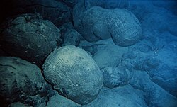
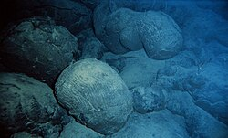
地质证据也有助于确定地球上液态水存在的时间范围。从伊苏阿绿岩带中回收的枕状玄武岩（一种在水下火山喷发过程中形成的岩石）样本，证明 38 亿年前地球上存在水。[ 36 ]在加拿大魁北克省的努夫武阿吉图克绿岩带，一项研究测定了 38 亿年前的岩石[ 37 ]，另一项研究测定了 42.8 亿年前的岩石[ 38 ]，证明了在这些年代存在水。[ 36 ]如果海洋存在于更早的时期，则尚未发现任何地质证据（这可能是因为这些潜在证据已被地壳再循环等地质过程摧毁）。最近，在 2020 年 8 月，研究人员报告称，自地球形成以来，地球上可能一直存在足够的水来填充海洋。[ 39 ] [ 40 ] [ 41 ]
与岩石不同，锆石是一种耐风化和地质作用的矿物，因此被用来了解地球早期的状况。锆石的矿物学证据表明，在地球形成后不久，即 44.04 ± 0.008 亿年前，液态水和大气层一定存在。[ 42 ] [ 43 ] [ 44 ] [ 45 ]这多少有些自相矛盾，因为冷早期地球假说认为，大约 44 亿到 40 亿年前，气温已经足够低，足以让水结冰。[ 46 ]其他对在澳大利亚冥古代岩石中发现的锆石的研究表明，早在 40 亿年前就存在板块构造。 [ 47 ]如果这是真的，那就意味着早期地球的表面与今天差不多（就热绝缘而言） ，而不是炽热的熔融表面和充满二氧化碳的大气层。板块构造作用捕获了大量的二氧化碳，从而减轻了温室效应，导致地表温度大大降低，并形成了固体岩石和液态水。[ 48 ]特性
.svg?_x_tr_sl=en&_x_tr_tl=zh-CN&_x_tr_hl=zh-CN&_x_tr_pto=wapp) 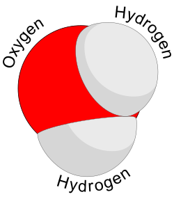
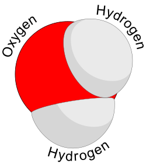
水（ H2O）是一种极性无机化合物。在室温下，它是一种无味无臭的液体，几乎无色，略带蓝色。作为最简单的氢硫族化合物，它是迄今为止研究最多的化合物，有时被称为“万能溶剂”，因为它能够溶解比任何其他液体更多的物质，[ 49 ] [ 50 ]尽管它不擅长溶解非极性物质。[ 51 ]这使得它成为“生命的溶剂”：[ 52 ]事实上，自然界中的水几乎总是包含各种溶解的物质，并且需要特殊的步骤才能获得化学纯净的水。水是在正常陆地条件下以固体、液体和气体形式存在的唯一常见物质。[ 53 ]
州
 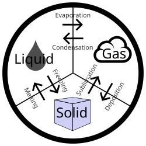
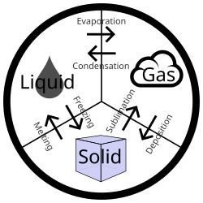
水和氧化烷是化合物H的两个正式名称之一
2O；[ 54 ]它也是H的液相
2O。[ 55 ]水的另外两种常见物质状态是固态冰和气态水蒸气。热量的增加或减少会引起相变：冻结（水变成冰）、融化（冰变成水）、汽化（水变成蒸汽）、凝结（蒸汽变成水）、升华（冰变成蒸汽）和沉积（蒸汽变成冰）。[ 56 ]
密度
水是少数几种常见的自然界物质之一，在某些温度范围内，冷却时密度会减小，也是唯一已知的在液态时密度会减小的自然界物质。此外，水的特殊之处在于，它在结冰时密度会显著减小，尽管这并非它独有的特征。[ d ]
 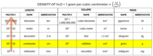
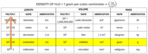
在 1 个大气压下，温度为 3.98 °C (39.16 °F) 时，其密度达到最大值 999.972 千克/立方米( 62.4262 磅/立方英尺)。[ 58 ] [ 59 ]
低于该温度但高于 0°C (32°F) 的冰点时，它会膨胀，密度会降低，直至达到冰点，液相密度达到 999.8 kg/m 3 (62.4155 lb/cu ft)。
一旦凝固成冰，它会膨胀约9%，密度为917千克/立方米（ 57.25磅/立方英尺）。[ 60 ] [ 61 ]这种膨胀会产生巨大的压力，导致管道爆裂、岩石开裂。[ 62 ]作为固体，它会表现出通常的行为：冷却时收缩，密度增加。这些不同寻常的热特性对地球上的生命有着重要的影响。
在湖泊或海洋中，4°C（39°F）的水会沉入海底，而水面则会结冰，漂浮在液态水之上。这些冰层隔绝了下面的水，防止其冻结成固体。如果没有这种保护，大多数生活在湖泊中的水生生物会在冬季死亡。[ 63 ]此外，这种异常现象是温盐环流的重要组成部分，温盐环流负责在地球海洋中分配热量。
磁性
水是一种抗磁性物质。[ 64 ]虽然相互作用很弱，但与超导磁体相互作用可以达到显著的效果。[ 64 ]
相变
在一个大气压(atm)下，冰在 0 °C (32 °F) 融化或水结冰（凝固），而水在 100 °C (212 °F) 沸腾或蒸汽凝结。然而，即使在沸点以下，水也可以通过蒸发在其表面转变为蒸汽（整个液体的汽化称为沸腾）。升华和沉积也会发生在表面。[ 56 ]例如，霜沉积在冷的表面上，而雪花则通过沉积在气溶胶颗粒或冰核上而形成。[ 65 ]在冻干过程中，食品被冷冻，然后在低压下储存，因此其表面的冰会升华。[ 66 ]
熔点和沸点取决于压力。克劳修斯-克拉珀龙关系式可以很好地近似地表示熔点随压力的变化率：

在哪里 和 是液相和固相的摩尔体积，并且 是摩尔熔化潜热。大多数物质在熔化时体积会增加，因此熔化温度会随着压力的升高而升高。然而，由于冰的密度小于水，熔化温度会降低。[ 57 ]在冰川中，如果冰层足够厚，压力融化就会发生，从而形成冰下湖泊。[ 67 ] [ 68 ]


克劳修斯-克拉珀龙关系也适用于沸点，但由于液/气相转变，气相的密度远低于液相，因此沸点随压力升高而升高。[ 69 ]在深海或地下，水可以在高温下保持液态。例如，黄石国家公园的老忠实间歇泉（ Old Faithful）的温度超过 205°C (401°F) 。[ 70 ]在热液喷口，温度可超过 400°C (752°F)。[ 71 ]
在海平面，水的沸点为 100 摄氏度（212 华氏度）。由于气压随海拔高度下降，沸点每升高 274 米就会下降 1 摄氏度。高海拔烹饪比海平面烹饪时间更长。例如，在 1,524 米（5,000 英尺）的高度，烹饪时间必须增加四分之一才能达到预期效果。[ 72 ]相反，可以使用高压锅通过提高沸腾温度来缩短烹饪时间。[ 73 ]在真空中，水在室温下就会沸腾。[ 74 ]
三相点和临界点
 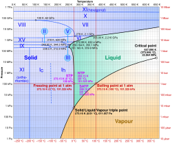
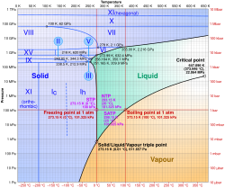
在压力/温度相图（见图）上，有将固体与蒸汽、蒸汽与液体以及液体与固体分隔开的曲线。这些曲线在称为三相点的一点相交，三个相在此可以共存。三相点的温度为 273.16 K（0.01 °C；32.02 °F），压力为 611.657 帕斯卡（0.00604 atm；0.0887 psi）；[ 75 ]这是液态水可以存在的最低压力。在 2019 年之前，三相点一直被用来定义开尔文温标。[ 76 ] [ 77 ]
水/气相曲线终止于 647.096 K（373.946 °C；705.103 °F）和 22.064 兆帕（3,200.1 psi；217.75 atm）。[ 78 ]这被称为临界点。在更高的温度和压力下，液相和气相形成一个连续相，称为超临界流体。它可以在气体和液体密度之间逐渐压缩或膨胀；它的性质（与环境水的性质截然不同）对密度敏感。例如，在合适的压力和温度下，它可以与非极性化合物（包括大多数有机化合物）自由混合。这使得它可用于各种应用，包括高温电化学，以及作为生态友好的溶剂或有机化合物化学反应的催化剂。在地幔中，它在矿物形成、溶解和沉积过程中充当溶剂。[ 79 ] [ 80 ]
冰和水的相
地球表面冰的正常形态是冰Ih，这种晶体具有六边形对称性。另一种具有立方晶体对称性的冰 Ic ，可以出现在高层大气中。[ 81 ]随着压力的增加，冰会形成其他晶体结构。截至 2024 年，已有 20 种结构得到实验证实，还有更多结构在理论上得到预测。[ 82 ]第 18 种冰形态，冰 XVIII，是一种面心立方超离子冰相，是在一滴水受到冲击波作用时发现的，冲击波使水滴的压力升高到数百万个大气压，温度升高到数千度，形成了一种由刚性氧原子组成的结构，氢原子可以在其中自由流动。[ 83 ] [ 84 ]当冰被夹在石墨烯层之间时，它会形成一个方格晶格。[ 85 ]
液态水的化学性质细节尚不十分清楚；一些理论认为，其不寻常的行为是由于存在两种液态。[ 59 ] [ 86 ] [ 87 ] [ 88 ]
味道和气味
纯净水通常被描述为无味无臭，尽管人类拥有特定的感官，能够感知口腔中的水的存在[ 89 ] [ 90 ]，青蛙也能够闻到水的气味。[ 91 ]然而，普通水源（包括矿泉水）通常含有许多溶解物质，这些物质可能赋予水不同的味道和气味。人类和其他动物已经进化出感官，能够评估水的可饮用性，从而避免饮用过咸或腐臭的水。[ 92 ]
颜色和外观
纯水由于吸收了约 600–800 纳米区域的光而呈现可见的蓝色。 [ 93 ]在日光下，将一杯自来水置于纯白色背景下，即可轻松观察到这种颜色。造成这种颜色的主要吸收带是O–H 伸缩振动的泛音。根据比尔定律，颜色的表观强度会随着水柱深度的增加而增加。例如，当光源是从泳池白色瓷砖反射的阳光时，这种情况也适用于游泳池。
在自然界中，由于悬浮固体或藻类的存在，颜色也可能从蓝色变为绿色。
在工业领域，近红外光谱法用于分析水溶液，因为水的低倍音强度较大，因此可以使用短光程的玻璃比色皿。为了观察水或水溶液在 3,500 cm −1 (2.85 μm)左右区域的基本伸缩吸收光谱[ 94 ]，需要约 25 μm 的光程。此外，比色皿必须在 3500 cm −1左右透明且不溶于水；氟化钙是水溶液比色皿窗口的常用材料之一。
例如，可以用 1 厘米的样品池来观察拉曼活性基本振动。
水生植物、藻类和其他光合生物可以在深达数百米的水中生存，因为阳光可以照射到它们。在1000米（3300英尺）以下的深度，几乎没有阳光可以照射到。
液态水的折射率（20 °C (68 ° F) 时为 1.333）远高于空气（1.0），与烷烃和乙醇的折射率相似，但低于甘油（1.473）、苯（1.501）、二硫化碳（1.627）和常见玻璃（1.4 至 1.6）。冰的折射率（1.31）低于液态水。
分子极性
 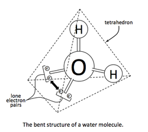
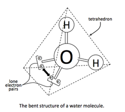
在水分子中，氢原子与氧原子形成104.5°的夹角。氢原子靠近以氧原子为中心的四面体的两个角。另外两个角上是孤对价电子，它们不参与成键。在完美的四面体中，原子间夹角应为109.5°，但孤对电子之间的排斥力大于氢原子之间的排斥力。[ 95 ] [ 96 ]氢氧键长约为0.096纳米。[ 97 ]
其他物质具有四面体分子结构，例如甲烷（CH
4)和硫化氢( H
2S）。然而，氧的电负性比大多数其他元素更强，因此氧原子带有部分负电荷，而氢原子则带有部分正电荷。这种弯曲的结构赋予了氧分子电偶极矩，使其被归类为极性分子。[ 98 ]
水是一种良好的极性溶剂，能够溶解多种盐类和亲水性有机分子，例如糖类以及乙醇等简单的醇类。水也能溶解多种气体，例如氧气和二氧化碳——后者使碳酸饮料、起泡酒和啤酒产生气泡。此外，生物体中的许多物质，例如蛋白质、DNA和多糖，都溶解在水中。水与这些生物大分子亚基之间的相互作用影响着蛋白质折叠、DNA碱基配对以及其他对生命至关重要的现象（疏水效应）。
许多有机物质（如油脂和烷烃）是疏水性的，即不溶于水。许多无机物质也不溶，包括大多数金属氧化物、硫化物和硅酸盐。
氢键
 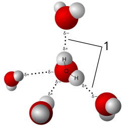
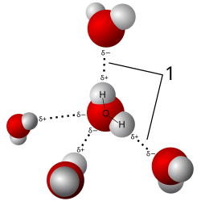
由于极性，液态或固态的水分子可以与相邻分子形成多达四个氢键。氢键的强度大约是范德华力的十倍，范德华力在大多数液体中吸引分子。这就是为什么水的熔点和沸点比硫化氢等其他类似化合物高得多的原因。它们也解释了水具有极高的比热容（约 4.2 J /(g·K)）、熔化热（约 333 J/g）、汽化热（2257 J/g）和热导率（0.561 至 0.679 W/(m·K) 之间）。这些特性使水能够储存热量并将其在海洋和大气之间传输，从而更有效地调节地球气候。水的氢键约为 23 kJ/mol（而共价 O-H 键为 492 kJ/mol）。其中，估计90%归因于静电，其余10%部分归因于共价键。[ 99 ]
这些键是水具有高表面张力[ 100 ]和毛细管力的原因。毛细管作用是指水在狭窄的管道中克服重力向上移动的趋势。所有维管植物，例如树木，都依赖于这一特性。 [需要引用]
 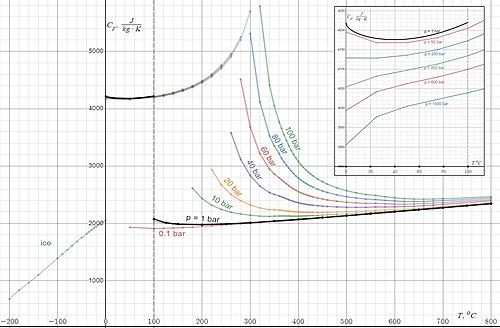
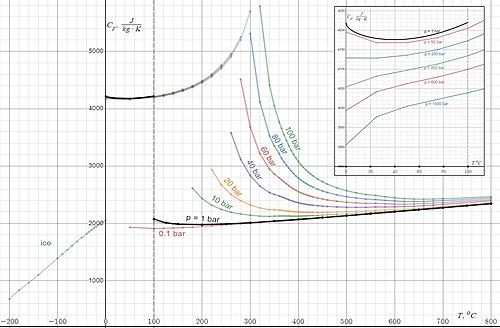
自电离
水是氢氧化氢的弱溶液——存在平衡2H
2氧⇌氢
3哦+
+哦−
，与生成的水合氢离子和氢氧根离子的溶剂化相结合。
电导率和电解
纯净水的电导率较低，但溶解少量离子物质（如食盐）后，电导率会升高。
液态水可以通过电流分解成氢和氧元素，这个过程称为电解。电解过程中所需的能量输入大于逆过程释放的热量（285.8 千焦/摩尔，或 15.9 兆焦/千克）。[ 102 ]
机械性能
在大多数情况下，液态水可以被认为是不可压缩的：其压缩率范围从 4.4 到在正常条件下为5.1 × 10 −10 Pa −1 。 [ 103 ]即使在 4 公里深处的海洋中，大气压为 400 个大气压，水的体积也只会减少 1.8%。[ 104 ]
在 20 °C（68 °F）时，水的粘度约为10 −3 Pa· s或 0.01泊。声速在液态水中随温度变化，在 1,400 至 1,540 米/秒（4,600 至 5,100 英尺/秒）之间。声音在水中传播距离很远，衰减很小，尤其是在低频下（1 kHz 时约为 0.03 dB / km ）。鲸类和人类利用这一特性进行通讯和环境感知（声纳）。[ 105 ]
反应性
电正性比氢更强的金属元素，尤其是碱金属和碱土金属，例如锂、钠、钙、钾和铯，会取代水中的氢，形成氢氧化物并释放出氢气。在高温下，碳与水蒸气反应生成一氧化碳和氢气。[需要引用]
在地球上
水文学是研究地球上水的运动、分布和水质的学科。水文学研究水的分布。水文地质学研究地下水的分布和运动，冰川学研究冰川，湖沼学研究内陆水域，海洋学研究海洋的分布。生态水文学的重点是研究水文学中的生态过程。
行星表面、地下和地表水的总质量被称为水圈。地球的水量（全球水资源总量）约为13.86亿立方公里（3.33亿立方英里）。[ 24 ]
液态水存在于水体中，例如海洋、大海、湖泊、河流、溪流、运河、池塘或水坑。地球上的大部分水是海水。大气中也存在水，包括固态、液态和气态。地下水也存在于蓄水层中。
水在许多地质过程中起着重要作用。大多数岩石中都含有地下水，地下水的压力影响着断层的模式。地幔中的水是俯冲带熔化形成火山的原因。在地球表面，水在化学和物理风化过程中都发挥着重要作用。水，以及在较小但仍然重要的程度上的冰，也是地球表面大量沉积物输送的原因。输送的沉积物沉积形成了许多类型的沉积岩，这些沉积岩构成了地球历史的地质记录。
水循环
 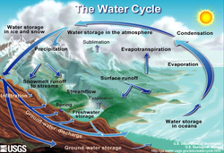
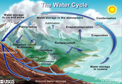
水循环（科学上称为水文循环）是水圈内、大气、土壤水、地表水、地下水和植物之间的不断水交换。
水在水循环中不断地流经这些区域，包括以下转移过程：
- 海洋和其他水体向空气中蒸发，陆地植物和动物向空气中蒸腾。
- 降水，由空气中的水蒸气凝结而成，落到地面或海洋上。
- 陆地径流通常会流入海洋。
大部分水蒸气（主要存在于海洋中）会返回海洋，但风会将水蒸气吹向陆地，其速度与径流流入海洋的速度相同，约为每年 47 万 亿吨，而陆地上的蒸发和蒸腾作用每年也会贡献另外 72 万亿吨。陆地上的降水量为每年 119 万亿吨，有几种形式：最常见的是雨、雪和冰雹，还有一些雾和露水。[ 106 ]露水是高密度水蒸气遇到凉爽的表面时凝结成的小水滴。露水通常形成于早晨气温最低的时候，日出之前，地球表面的温度开始上升的时候。[ 107 ]空气中的凝结水也可能折射 阳光产生彩虹。
径流通常汇聚在流域，最终汇入河流。通过侵蚀，径流塑造了环境，形成了河谷和三角洲，为人口中心的建立提供了肥沃的土壤和平坦的地面。洪水是指一片土地（通常是低洼地区）被水覆盖，这种情况发生在河水漫过河岸或发生风暴潮时。另一方面，干旱是指一个地区持续数月或数年缺水的情况。干旱是指一个地区由于地形或纬度位置的原因，降雨量持续低于平均水平。
水资源
水资源是指对人类具有潜在用途的自然水资源， [ 108 ]例如，可作为饮用水或灌溉用水的来源。水既有“存量”，也有“流量”。水可以储存在湖泊、水蒸气、地下水或含水层以及冰雪中。全球淡水总量中，估计有69%储存在冰川和永久积雪中；30%储存在地下水中；其余1%储存在湖泊、河流、大气和生物群中。[ 109 ]水的 储存时间差异很大：一些含水层由储存了数千年的水组成，但湖泊水量可能会随季节波动，在干旱时期减少，在丰水期增加。一些地区供水的很大一部分来自从水库 中抽取的水，当抽取量超过补给量时，水库就会减少。据估计，用于灌溉的总水量中高达 30% 来自于不可持续的地下水开采，从而导致地下水枯竭。[ 110 ]
海水和潮汐
海水平均含有约3.5%的氯化钠，以及少量其他物质。海水的物理性质在一些重要方面与淡水不同。海水在较低温度（约−1.9°C (28.6°F)）下结冰，其密度随着温度降至冰点而增加，而不是在高于冰点的温度下达到最大密度。主要海域的海水盐度从波罗的海的0.7%到红海的4.0%不等。（死海以其30%至40%的超高盐度而闻名，实际上是一个咸水湖。）
潮汐是由于月球和太阳的引潮力作用于海洋而引起的局部海平面周期性升降。潮汐引起海洋和河口水体的深度变化，并产生振荡水流，即所谓的潮流。特定地点产生的潮汐变化是月球和太阳相对于地球位置变化的结果，加上地球自转和当地水深的影响。潮间带是潮汐作用下重要的生态产物，它在涨潮时被淹没，在退潮时露出水面。
 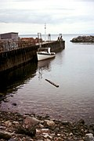
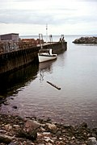 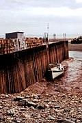
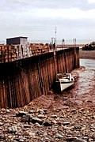对生活的影响
 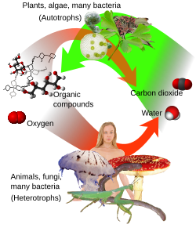
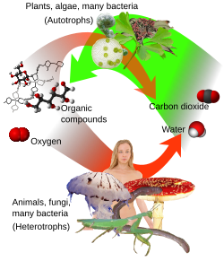
从生物学角度来看，水具有许多对生命繁衍至关重要的独特特性。它通过使有机化合物发生反应并最终允许复制来发挥这一作用。所有已知的生命形式都依赖于水。水既是人体许多溶质溶解的溶剂，也是人体许多代谢过程的重要组成部分，两者均至关重要。代谢是合成代谢和分解代谢的总和。 在合成代谢中，水从分子中分离（通过需要能量的酶促化学反应）以生长更大的分子（例如，淀粉、甘油三酸酯和蛋白质，用于储存燃料和信息）。在分解代谢中， 水被用来打破化学键以生成更小的分子（例如，葡萄糖、脂肪酸和氨基酸，用作能量或其他用途的燃料）。没有水，这些特殊的代谢过程就不可能存在。
水是光合作用和呼吸作用的基础。光合细胞利用太阳能将水里的氢从氧中分离出来。[ 111 ]在阳光的作用下，氢与二氧化碳结合
2（从空气或水中吸收）形成葡萄糖并释放氧气。[ 112 ]所有活细胞都使用此类燃料，并氧化氢和碳来捕获太阳能并重新形成水和二氧化碳
2在这个过程中（细胞呼吸）。
水也是酸碱中性和酶功能的核心。酸，氢离子（H+
，即质子）供体，可以被碱、质子受体（如氢氧根离子（OH））中和。−
）生成水。水被认为是中性的，理想状态下的pH值（氢离子浓度的负对数）为7。pH值小于7为酸， pH值大于7为碱。
水生生物形式
地球表层水域充满生机。最早的生命形式出现在水中；几乎所有鱼类都只生活在水中，还有许多种类的海洋哺乳动物，例如海豚和鲸鱼。有些动物，例如两栖动物，一生中一部分时间在水中度过，一部分时间在陆地上度过。海带和藻类等植物在水中生长，是一些水下生态系统的基础。浮游生物通常是海洋食物链的基础。
水生脊椎动物必须获取氧气才能生存，它们通过各种方式获取氧气。鱼有鳃而不是肺，但有些鱼，比如肺鱼，鳃和肺都有。海豚、鲸鱼、水獭和海豹等海洋哺乳动物需要定期浮出水面呼吸空气。一些两栖动物能够通过皮肤吸收氧气。无脊椎动物表现出各种各样的进化特征以便在缺氧的水中生存，包括呼吸管（参见昆虫和软体动物的虹吸管）和鳃（Carcinus）。然而，由于无脊椎动物是在水生环境中进化的，因此大多数无脊椎动物对水中呼吸的专门化程度很低或根本没有。
 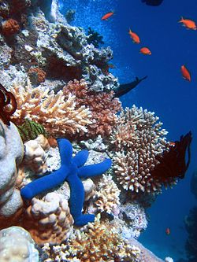
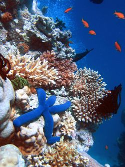 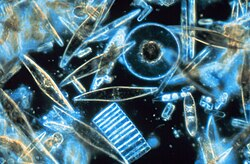
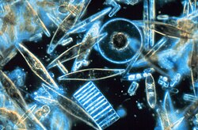 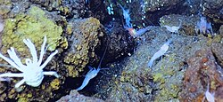
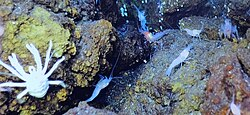对人类文明的影响
| 了解更多 |

历史上，文明总是围绕河流和主要水道繁荣发展；美索不达米亚，所谓的文明摇篮之一，就位于底格里斯河和幼发拉底河之间；古代埃及社会完全依赖尼罗河。早期印度河流域文明（约 公元前 3300 年 - 约 公元前 1300 年）沿着印度河及其发源于喜马拉雅山脉的支流发展起来。罗马也是在意大利的台伯河畔建立的。鹿特丹、伦敦、蒙特利尔、巴黎、纽约、布宜诺斯艾利斯、上海、东京、芝加哥和香港等大都市的成功部分归功于其便捷的水路交通以及随之而来的贸易扩张。拥有安全水港的岛屿，如新加坡，也因同样的原因而繁荣发展。在北非和中东等水资源较为匮乏的地方，获得清洁饮用水过去是、现在仍然是人类发展的重要因素。
健康与污染

适合人类饮用的水被称为饮用水或可饮用水。不适合饮用的水可以通过过滤、蒸馏或一系列其他方法使其变得可饮用。超过6.6亿人无法获得安全的饮用水。[ 113 ] [ 114 ]
不适合饮用，但用于游泳或沐浴时不会对人体造成危害的水，除了饮用水或饮用水外，还有各种不同的名称，有时被称为安全水或“沐浴安全水”。氯是一种刺激皮肤和黏膜的物质，用于确保水质安全，可用于沐浴或饮用。氯的使用技术性很强，通常受政府法规监控（通常饮用水中氯含量为百万分之1 (ppm)，沐浴水中氯含量为1-2 ppm，且氯尚未与杂质发生反应）。沐浴用水可以使用氯或臭氧等化学消毒剂或紫外线来保持令人满意的微生物状态。
水回收是将废水（最常见的是污水，也称为城市污水）转化为可用于其他用途的水的过程。全球有23亿人生活在缺水的国家，这意味着每人每年获得的水量不足1700立方米（60000立方英尺）。全球每年产生3800亿立方米（13 × 10^ 12 立方英尺）的城市废水。[ 115 ] [ 116 ] [ 117 ]
淡水是一种可再生资源，通过自然水文循环进行循环利用，但由于自然空间和时间分布不均、农业和工业日益增长的经济需求以及人口增长，淡水获取压力不断增加。目前，全球近 10 亿人缺乏安全、负担得起的水。2000 年，联合国制定了千年发展目标，到 2015 年将全球无法获得安全饮用水和卫生设施的人口比例减半。实现这一目标的进展并不均衡，2015 年，联合国承诺实现可持续发展目标，到 2030 年实现人人享有安全和负担得起的水和卫生设施。水质差和卫生条件差是致命的；每年约有 500 万人死于与水有关的疾病。世界卫生组织估计，安全饮用水每年可防止 140 万儿童死于腹泻。 [ 118 ]
在发展中国家，90% 的城市废水仍未经处理就排入当地的河流和溪流。[ 119 ]约有 50 个国家（约占世界人口的三分之一）也遭受着中度或高度缺水的困扰，其中 17 个国家每年的取水量超过了其自然水循环的补给量。[ 120 ]这种压力不仅影响河流和湖泊等地表淡水水体，还会破坏地下水资源。
人类用途
 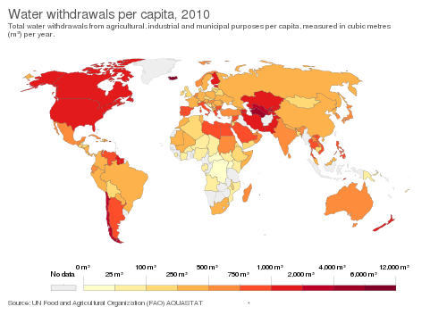
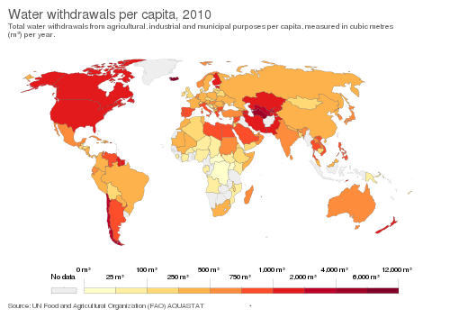
农业
人类用水的最大用途是农业，包括灌溉农业，占人类总用水量的 80% 至 90%。[ 122 ]在美国，42% 的淡水取用量用于灌溉，但“消耗”的水（被使用但未返回环境的水）绝大多数都用于农业。[ 123 ]
获取淡水资源通常被视为理所当然，尤其是在发达国家，这些国家已经建立了完善的水系统，用于收集、净化和输送水源，并处理废水。然而，日益增长的经济、人口和气候压力，加剧了人们对水资源问题的担忧，导致对固定水资源的竞争加剧，从而催生了“水资源峰值”的概念。[ 124 ]随着人口和经济的持续增长，对耗水肉类的消费量不断扩大，以及对生物燃料或新兴耗水产业的需求不断增长，新的水资源挑战可能随之而来。[ 125 ]
2007年，国际水资源管理研究所（International Water Management Institute）在斯里兰卡开展了一项农业用水管理评估，旨在了解全球是否有足够的水资源为不断增长的人口提供粮食。 [ 126 ]该评估评估了全球范围内当前的农业用水供应情况，并绘制了缺水地区。研究发现，全球五分之一的人口（超过12亿）生活在物理缺水地区，这些地区的水资源无法满足所有需求。另有16亿人生活在经济缺水地 区，由于缺乏对水资源的投资或人力资源不足，当局无法满足用水需求。报告发现，未来生产所需的粮食是可能的，但如果目前的粮食生产和环境趋势持续下去，将 导致世界许多地区出现危机。为了避免全球水危机，农民必须努力提高生产力以满足日益增长的粮食需求，同时工业和城市也必须找到更高效的用水方式。[ 127 ]
生产耗水量大的产品也会导致水资源短缺。例如棉花：生产1公斤棉花（相当于一条牛仔裤）需要10.9立方米（380立方英尺）的水。虽然棉花占全球用水量的2.4%，但这些水却被消耗在原本就面临缺水风险的地区。棉花生产已经造成了严重的环境破坏：例如，前苏联从阿姆河和锡尔河引水种植棉花，是造成咸海消失的主要原因。[ 128 ]
 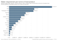
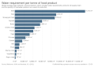 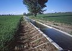
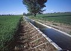作为科学标准
1795年4月7日，法国将1克定义为“在冰融化的温度下，一体积纯净水（体积相当于百分之一米的立方体）的绝对重量”。[ 129 ]但出于实际目的，需要一个质量是千克一千倍的金属参考标准。因此，人们开始着手精确测定一升水的质量。尽管当时对1克的定义是0摄氏度（32华氏度）下的水——一个高度可重复的温度——但科学家们选择重新定义标准，并在水密度最高的温度下进行测量，当时测得的温度为4摄氏度（39华氏度）。[ 130 ]
国际单位制的开尔文温标最初基于水的三相点，定义为精确的273.16 K（0.01 °C；32.02 °F），但自2019年5月起，开尔文温标改为基于玻尔兹曼常数。开尔文温标是一个绝对温标，其增量与摄氏温标相同，而摄氏温标最初是根据水的沸点（设为100 °C（212 °F））和熔点（设为0 °C（32 °F））定义的。
天然水主要由氢-1和氧-16同位素组成，但也含有少量较重的同位素，例如氧-18、氧-17和氢-2（氘）。这些较重同位素的含量虽然很小，但仍会影响水的性质。河流和湖泊中的水通常比海水含有更少的重同位素。因此，标准水的定义遵循维也纳标准平均海水规范。
饮用

 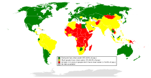
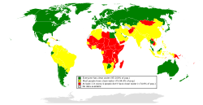
 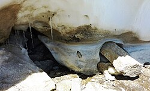
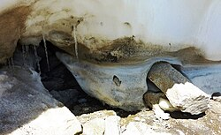
人体含有 55% 到 78%的水，具体取决于体型。[ 131 ] [用户生成的来源？ ]为保持正常运作，身体每天需要 1 至 7 升（0.22 至 1.54 英制加仑；0.26 至 1.85 美制加仑） [需要引用]的水来避免脱水； 准确的摄入量取决于活动水平、温度、湿度和其他因素。除了直接饮用白开水外，大部分水分是通过食物或饮料摄入的。目前尚不清楚健康人需要摄入多少水，但英 国饮食协会建议，每天至少需要 2.5 升水才能保持适当的水分，其中包括直接从饮料中获取的 1.8 升（6 至 7 杯）。[ 132 ]医学文献倾向于较低的消耗，通常平均男性每天需要 1 升水，这还不包括因运动或炎热天气导致的体液流失所需的额外需求。[ 133 ]
健康的肾脏每小时可排出0.8至1升水，但运动等压力会减少这一量。人们在运动时可能会饮用远超所需的水量，从而面临水中毒（水合过度）的风险，而这可能是致命的。[ 134 ] [ 135 ] “人每天应该喝八杯水”这一流行说法似乎没有真正的科学依据。[ 136 ]研究表明，额外摄入水分，尤其是在进餐时摄入高达500毫升（18英制液量盎司；17美制液量盎司）的水分，与体重减轻有关。[ 137 ] [ 138 ] [ 139 ] [ 140 ] [ 141 ] [ 142 ]充足的液体摄入有助于预防便秘。[ 143 ]

1945 年，美国国家研究委员会食品与营养委员会最初提出了饮水量建议：“不同人群的普通标准是每摄入一卡路里食物需摄入 1 毫升水。其中大部分摄入量来自预制食品。” [ 144 ]美 国国家研究委员会最新的膳食参考摄入量报告根据美国调查数据（包括食物来源）得出的总饮水量中位数，建议男性每日饮水量为 3.7 升（0.81 英制加仑；0.98 美制加仑），女性每日饮水量为 2.7 升（0.59 英制加仑；0.71 美制加仑）。报告指出，食物中的水分约占调查中总饮水量的 19%。[ 145 ]
具体来说，孕妇和哺乳期妇女需要补充水分。美国医学研究所建 议，男性平均每日饮水量为 3 升（0.66 英制加仑；0.79 美制加仑），女性平均每日饮水量为 2.2 升（0.48 英制加仑；0.58 美制加仑）；孕妇应将饮水量增至 2.4 升（0.53 英制加仑；0.63 美制加仑），哺乳期妇女则应饮水量为 3 升（12 杯），因为哺乳期间会流失大量的液体。[ 146 ]还要注意的是，通常约 20% 的水分摄入来自食物，其余来自饮用水和饮料（包括含咖啡因的饮料）。水分以多种形式从体内排出：通过尿液和粪便、出汗以及呼吸中呼出的水蒸气。随着体力消耗和高温暴露，水分流失会增加，每日液体需求量也可能会增加。
人类需要杂质较少的水。常见的杂质包括金属盐和氧化物，例如铜、铁、钙和铅[ 147 ] [需要完整引文] ，以及弧菌等有害细菌。有些溶质是可以接受的，甚至是理想的，因为它们可以增强口感并提供所需的电解质。[ 148 ]
按体积计算，最大的可饮用淡水资源是西伯利亚的贝加尔湖。 [ 149 ]
洗涤

洗涤是一种清洁的方法，通常使用水和肥皂或清洁剂。定期清洗并漂洗身体和衣物是良好卫生和健康的重要组成部分。[ 150 ] [ 151 ] [ 152 ]
人们通常使用肥皂和清洁剂来帮助乳化油脂和污垢颗粒，从而将其洗掉。可以直接涂抹肥皂，也可以借助毛巾、海绵或类似的清洁工具来擦拭。
在社交场合，洗礼指的是沐浴，或清洗身体不同部位，如手、头发或脸。过度清洗可能会损伤头发，导致头皮屑，或导致皮肤粗糙/皮肤病变。[ 153 ] [ 154 ]在基督教和犹太教等宗教中，一些清洗身体的仪式是一种净化行为。
洗涤也可以指清洗物品。例如，清洗衣物或其他布制品（例如床单），或者清洗碗碟或炊具。保持物品清洁，尤其是接触食物或皮肤的物品，有助于卫生。其他类型的洗涤侧重于保持脏污物品的清洁和耐用性，例如洗车时用洗车液在外部起泡，或者清洗用于脏污工序的工具。

运输
海上运输（或远洋运输）或更普遍的水路运输，是指通过水路运输人员（乘客）或货物（货物） 。自古以来，水路货运一直被广泛使用，因为它比陆路运输能够更大容量地运送乘客和货物。陆路运输受地形条件和公路/铁路基础设施的影响，单位有效载荷成本通常更高。20世纪航空业的出现降低了海上旅行对乘客的重要性，尽管它在短途旅行和游轮旅行中仍然很受欢迎。水路运输比飞机或陆地车辆（公路和铁路）运输便宜得多，[ 155 ]但长途旅行的速度明显较慢，并且严重依赖足够的港口设施。根据联合国贸易和发展会议2020 年的数据，海上运输约占国际贸易的 80% 。
只要有可供船只、船舶或驳船航行的连接水域（例如海洋、湖泊、河流和运河），海上运输就可以实现任何距离。航运可以用于商业、娱乐或军事目的，并且是人类社会物流的一个重要方面，因为早期造船术和河流工程的发展导致了不同文明的运河时代。虽然今天广泛的内河航运已不再那么重要，但包括许多运河在内的世界主要水道仍然非常重要，是全球经济不可分割的组成部分。特别是，任何物质都可以通过水路运输；然而，当物质交付对时间要求严格时，例如各种易腐烂农产品，水路运输就变得不切实际。尽管如此，对于定期调度的货物，例如消费品的跨洋运输，特别是对于重载或散装货物，例如煤炭、焦炭、矿石或谷物，水路运输仍然具有很高的成本效益。可以说，工业革命的最初影响是通过运河、航运或自然水道上各种船只的廉价水运支持具有成本效益的散装运输。
自20世纪70年代起，集装箱运输彻底改变了海上运输。“普通货物”包括用箱子、纸箱、托盘和桶包装的货物。当货物以多种运输方式运输时，即为多式联运或联合运输。化学用途
水在化学反应中被广泛用作溶剂或反应物，较少用作溶质或催化剂。在无机反应中，水是一种常见的溶剂，能溶解许多离子化合物以及其他极性化合物，如氨和与水密切相关的化合物。在有机反应中，水通常不用作反应溶剂，因为它不能很好地溶解反应物，而且是两性（酸性和碱性）和亲核性的。然而，这些特性有时是可取的。此外，人们还观察到水会加速狄尔斯-阿尔德反应。超临界水最近是一个研究课题。氧饱和的超临界水可以有效地燃烧有机污染物。
热交换
水和蒸汽是用于热交换的常见流体，因为它们易于获取且热容量高，可用于冷却和加热。冷水甚至可以从湖泊或海洋中自然获得。由于水的汽化潜热很大，通过水的汽化和冷凝来传递热量特别有效。缺点是，未经处理的水和蒸汽会使工业中常见的金属（例如钢和铜）更快氧化。在几乎所有火力发电站中，水都被用作工作流体（用于锅炉、蒸汽轮机和冷凝器之间的闭环）和冷却剂（用于将废热交换到水体或通过冷却塔中的蒸发将其带走）。在美国，冷却发电厂是水的最大用途。[ 156 ]
在核电工业中，水也可以用作中子慢化剂。在大多数核反应堆中，水既是冷却剂，也是慢化剂。这在某种程度上提供了一种被动安全措施，因为从反应堆中排出水也会减缓核反应的速度。然而，其他方法也更倾向于停止反应，最好是用水覆盖堆芯，以确保充分冷却。
防火考虑

水的汽化热很高，而且相对惰性，这使得它成为一种很好的灭火液体。水的蒸发会带走火焰的热量。用水扑灭油类和有机溶剂引起的火灾非常危险，因为许多有机物质会漂浮在水面上，而水往往会使燃烧的液体扩散。
使用水灭火时还应考虑蒸汽爆炸的危险，当在密闭空间内用水扑灭非常热的火灾时可能会发生蒸汽爆炸，以及氢气爆炸的危险，当与水发生反应的物质（例如某些金属或热碳，如煤、木炭或焦炭石墨）分解水并产生水煤气时。
切尔诺贝利核事故中就曾展现过此类爆炸的威力，尽管此次事故中涉及的水并非来自灭火，而是来自反应堆自身的水冷却系统。当堆芯极度过热导致水闪蒸成蒸汽时，发生了蒸汽爆炸。蒸汽与高温锆发生反应，可能引发氢气爆炸。
一些金属氧化物，尤其是碱金属和碱土金属的氧化物，与水反应会产生大量热量，从而可能引发火灾。碱土金属氧化物生石灰，也称为氧化钙，是一种批量生产的物质，通常用纸袋运输。如果纸袋被水浸透，里面的物质可能会与水发生反应而自燃。[ 157 ]
娱乐

人类将水用于多种娱乐目的，以及锻炼和运动。其中包括游泳、滑水、划船、冲浪和潜水。此外，一些运动，如冰球和滑冰，是在冰上进行的。湖畔、海滩和水上公园是人们放松和享受娱乐的热门场所。许多人发现流水的声音和外观令人平静，喷泉和其他流水结构是受欢迎的装饰品。有些人在水族馆或池塘里饲养鱼类和其他动植物，供表演、娱乐和陪伴。人类还利用水进行滑雪、雪橇、雪地摩托或单板滑雪等雪上运动，这些运动需要水处于低温状态，要么结成冰，要么结晶成雪。
水务行业
水务行业为家庭和工业提供饮用水和废水处理服务（包括污水处理）。供水设施包括水井、雨水收集池、供水管网、净水设施、水箱、水塔、水管（包括旧式渡槽）。大气制水机正在研发中。
饮用水通常是从泉眼收集、从地下的人工钻孔（井）提取、或从湖泊和河流抽取。因此，在适当的地方修建更多水井是一种生产更多水的可能方式，前提是含水层可以提供足够的水流。其他水源包括收集雨水。水可能需要净化才能供人类饮用。这可能涉及去除不溶解物质、溶解物质和有害微生物。常用方法是用沙子过滤，这只能去除不溶解的物质，而氯化和煮沸可以杀死有害微生物。蒸馏可以同时完成这三种功能。还有更先进的技术，例如反渗透。在沿海干旱气候下，对丰富的海水进行脱盐是一种更昂贵的解决方案。
饮用水的分配是通过市政供水系统、水罐车或瓶装水进行的。许多国家的政府都有向有需要的人免费供水的项目。
减少用水量，仅将饮用水用于人类消费是另一种选择。在香港等一些城市，为了节约淡水资源，海水被广泛用于全市冲厕。
污染水源可能是对水资源最大的滥用；如果污染物限制了水的其他用途，无论污染者是否受益，都是一种资源浪费。与其他类型的污染一样，水污染不纳入市场成本的标准核算，被视为市场无法解释的外部因素。因此，其他人为水污染买单，而私营企业的利润却没有重新分配给当地居民——污染的受害者。人类摄入的药物最终往往会进入水道，如果它们在生物体内累积且不可生物降解，则会对水生生物造成有害影响。
市政和工业废水通常在污水处理厂进行处理。通过各种预防和处理技术来减轻地表径流的污染。

 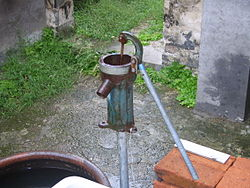
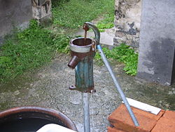

工业应用
许多工业过程依赖于利用溶解在水中的化学物质、悬浮在水浆中的固体物质或用水溶解和提取物质、清洗产品或工艺设备进行的反应。采矿、化学制浆、纸浆漂白、造纸、纺织品生产、染色、印刷以及发电厂冷却等过程都需要大量的水，需要专用水源，并且经常造成严重的水污染。
水力发电利用水力。水力发电是通过水力发电获得的电力。水力发电的动力来自水力驱动连接到发电机的水轮机。水力发电是一种低成本、无污染的可再生能源。其能量来源于水的运动。通常在河流上建造水坝，在水坝后形成一个人工湖。从湖中流出的水被压入涡轮机，从而带动发电机运转。
 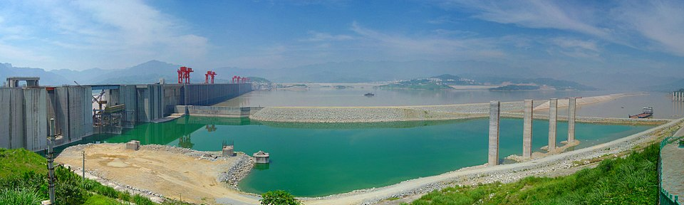
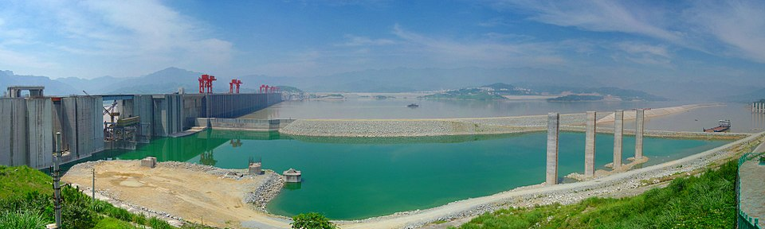加压水用于水射流和水射流切割。高压水枪用于精确切割。它效果很好，相对安全，并且对环境无害。它还用于机械冷却，以防止过热，或防止锯片过热。
水除了用作化学溶剂外，还用于许多工业流程和机器，例如蒸汽轮机和热交换器。工业废水未经处理即排放，造成污染。污染包括排放溶质（化学污染）和排放冷却水（热污染）。工业领域需要纯净水用于多种用途，并在供水和排水过程中采用各种净化技术。
食品加工

 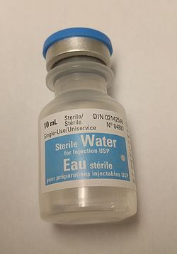
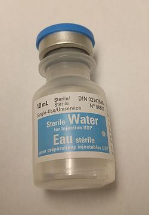
煮、蒸和煨都是常用的烹饪方法，通常需要将食物浸入水或气态蒸汽中。[ 158 ]水也用于洗碗。水在食品科学领域也扮演着许多关键角色。
水中的溶质（例如盐和糖）会影响水的物理性质。水的沸点和凝固点受溶质以及气压的影响，而气压又受海拔高度的影响。海拔越高，气压越低，水的沸点就越低。每千克水中加入一摩尔蔗糖（糖）会使水的沸点升高 0.51 摄氏度（0.918 华氏度），每千克水中加入一摩尔盐会使沸点升高 1.02 摄氏度（1.836 华氏度）；同样，增加溶解颗粒的数量会降低水的凝固点。[ 159 ]
水中的溶质也会影响水的活度，而水的活度又会影响食品中的许多化学反应和微生物的生长。[ 160 ]水活度可以描述为溶液中水的蒸气压与纯水的蒸气压之比。[ 159 ]水中的溶质会降低水的活度——了解这一点很重要，因为大多数细菌的生长在水活度较低时就会停止。[ 160 ]微生物的生长不仅影响食品安全，还影响食品的保存和保质期。
水的硬度也是食品加工中的一个关键因素，可以通过化学离子交换系统进行改变或处理。它会显著影响产品质量，并在卫生方面发挥重要作用。水的硬度是根据水中碳酸钙的浓度来划分的。如果水中碳酸钙的含量低于100毫克/升（英国）[ 161 ]或低于60毫克/升（美国）[ 162 ] ，则为软水。
根据水足迹组织 2010 年发布的一份报告，生产 1 公斤牛肉需要 1.5 万升（3.3 × 103英制 加仑；4.0 × 103美制 加仑）的水；不过，作者也明确表示，这是一个全球平均水平，牛肉生产的用水量还受到环境因素的影响。[ 163 ]
医疗用途
自然界分布
在宇宙中
 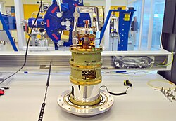
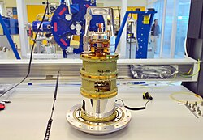
宇宙中的大部分水是恒星形成的副产品。恒星的形成伴随着强烈的气体和尘埃向外的风。当这些物质的流出最终撞击周围的气体时，产生的冲击波会压缩和加热气体。我们观察到的水就是在这种温暖致密的气体中迅速产生的。[ 166 ]
2011年7月22日，一份报告描述了在距离地球120亿光年的类星体周围发现一团巨大的水蒸气云，其水含量“是地球所有海洋总和的140万亿倍” 。研究人员称，“这一发现表明，自宇宙诞生以来，水几乎一直存在于宇宙中”。[ 167 ] [ 168 ]
在银河系内的星际云中发现了水。[ 169 ]其他星系中可能也存在丰富的水，因为水的成分氢和氧是宇宙中最丰富的元素之一。根据太阳系以及其他恒星系统的形成和演化模型，大多数其他行星系统很可能也含有类似的成分。
水蒸气
水以蒸汽形式存在于：
- 太阳大气：可检测到的痕量[ 170 ]
- 水星大气：3.4%，水星 外逸层含有大量水[ 171 ]
- 金星大气：0.002% [ 172 ]
- 地球大气层：整个大气层约占0.40%，地表通常占1-4%
- 月球大气：微量[ 173 ]
- 火星大气：0.03% [ 174 ]
- 谷神星的大气层[ 175 ]
- 木星的大气层：0.0004% [ 176 ] –仅存在于冰中；它的卫星木卫二的大气层： 0.0004% [ 177 ]
- 土星大气–仅由冰组成；土卫二：91% [ 178 ]以及土卫四（外逸层）[需要引用]
- 天王星大气——低于50巴的微量
- 海王星大气——位于深层[ 179 ]
- 系外行星大气层：包括HD 189733 b [ 180 ]和HD 209458 b、[ 181 ] 牧夫座τ b、[ 182 ] HAT-P-11b、[ 183 ] [ 184 ] XO-1b、WASP-12b、WASP-17b和WASP-19b 的大气层。[ 185 ]
- 恒星大气：不仅限于温度较低的恒星，甚至在参宿四、仙王座μ、心宿二和大角星等巨大高温恒星中也能探测到。[ 184 ] [ 186 ]
- 恒星周盘：包括超过一半金牛座T型恒星的恒星周盘，例如金牛座AA [ 184 ]、长蛇座TW [ 187 ] [ 188 ] IRC +10216 [ 189 ]和APM 08279+5255 [ 167 ] [ 168 ]大 犬座VY和英仙座S [ 186 ]。
液态水
地球上存在液态水，覆盖了其表面 71% 的面积。[ 23 ]火星上偶尔也存在少量液态水。[ 190 ]科学家认为，液态水存在于土卫二的两颗卫星中。土卫二南极表面以下约 30-40 公里处有一片厚 10 公里的海洋，[ 191 ] [ 192 ]土卫六的地下层中也有液态水，可能与氨混合。[ 193 ]木星的卫星木卫二的表面特征表明地下存在液态水海洋。[ 194 ]木星的卫星木卫三上也可能存在液态水，它是夹在高压冰和岩石之间的一层。[ 195 ]
水冰
水以冰的形式存在于：
-
 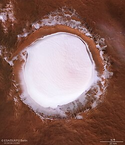
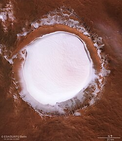
火星 科罗廖夫陨石坑 中的水冰 - 地月系统：主要为地球冰盖、月球陨石坑和火山岩。 [ 198 ] 2009 年 9 月，美国宇航局报告称，印度空间研究组织的月船一号航天器上的月球矿物学测绘仪探测到了水分子。[ 199 ]
- 谷神星[ 200 ] [ 201 ] [ 202 ]
- 木星的卫星：木卫二的表面，以及木卫三[ 203 ]和木卫四[ 204 ] [ 205 ]的表面
- 土星：位于行星环系统[ 206 ]中，以及土卫六[ 207 ]和土卫二[ 208 ]的表面和地幔上。
- 冥王星–卡戎系统[ 206 ]
- 彗星[ 209 ] [ 210 ]以及其他相关的柯伊伯带和奥尔特云天体[ 211 ]
 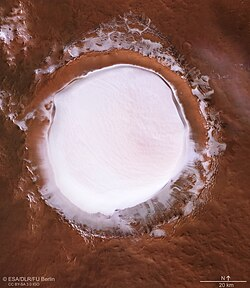
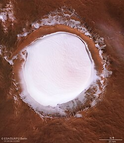{kind=link}
{kind=link}
{kind=link}
{kind=link}
并且还可能出现在：
奇异的形式
天王星和海王星的内部结构可能主要由水和其他挥发物组成，深层的水可能以离子水的形式存在，其中分子分解成氢离子和氧离子的混合物；更深层的水可能以超离子水的形式存在，其中氧结晶，但氢离子在氧晶格内自由漂浮。[ 214 ]
水与行星宜居性
地球上液态水的存在，以及程度较轻的气态和固态水的存在，对于我们所知的地球生命的存在至关重要。地球位于太阳系的宜居带；如果它距离太阳稍近或稍远（约5%，即约800万公里），那么允许这三种形态同时存在的条件就不太可能存在。[ 215 ] [ 216 ]
地球引力使其能够维持大气层。大气中的水蒸气和二氧化碳提供了温度缓冲（温室效应），有助于维持相对稳定的地表温度。如果地球更小，更稀薄的大气层将导致极端温度的出现，从而阻止水的积累，除非在极地冰盖（例如火星）。[需要引用]
尽管太阳辐射（日照）水平不断变化，但地球表面温度在整个地质年代中一直相对恒定，这表明地球温度存在一个动态过程，该过程通过温室气体和地表或大气反照率的共同作用来控制。这一假设被称为盖亚假说。[需要引用]
行星上水的状态取决于环境压力，而环境压力又由行星的引力决定。如果行星质量足够大，由于引力造成的高压，其上的水即使在高温下也可能保持固态，就像在系外行星格利泽 436 b [ 217 ]和GJ 1214 b [ 218 ]上观测到的那样。
法律、政治和危机
| 了解更多
此部分需要更新。（2022 年 6 月）
|
 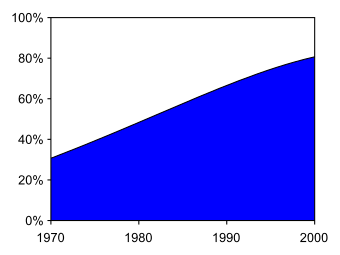
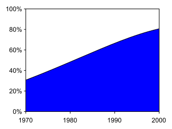
水政治是受水和水资源影响的政治。水，尤其是淡水，是世界各地的战略资源，也是许多政治冲突中的重要因素。它对健康造成影响，并破坏生物多样性。
过去几十年来，世界各地安全饮用水的获取状况几乎都有所改善，但约有 10 亿人仍然缺乏安全饮用水，超过 25 亿人缺乏适当的卫生设施。[ 219 ]然而，一些观察人士估计，到 2025 年，全球超过一半的人口将面临水资源短缺的问题。[ 220 ] 2009 年 11 月发布的一份报告显示，到 2030 年，世界一些发展中地区的水需求将超过供应量 50%。[ 221 ]
自 1990 年以来，已有 16 亿人获得了安全水源。[ 222 ]据计算，发展中国家获得安全饮用水的人口比例已从 1970 年的 30% [ 223 ]提高到 1990 年的 71%、2000 年的 79% 和 2004 年的 84%。[ 219 ]
2006 年联合国的一份报告指出，“人人都有足够的水”，但管理不善和腐败阻碍了人们获得水资源。[ 224 ]此外，水务领域捐助方对《巴黎援助有效性宣言》等旨在提高援助效率的全球倡议的响应不如对教育和卫生领域那样有效，这可能导致多个捐助方开展重叠项目，而受援国政府则无力采取行动。[ 225 ]
2007年《农业水资源管理综合评估》的作者指 出，治理不善是造成某些形式水资源短缺的原因之一。水治理是一系列正式和非正式的流程，通过这些流程可以做出与水资源管理相关的决策。良好的水治理主要在 于了解在特定的自然和社会经济环境下，哪些流程最有效。有时，人们试图将发达国家行之有效的“蓝图”套用到发展中国家的地区和环境中，会犯下错误。湄公河 就是一个例子；国际水资源管理研究所对六个依赖湄公河供水的国家的政策进行了审查，发现这些国家很少进行彻底透明的成本效益分析和环境影响评估。他们还发现，柬埔寨的水法草案比实际需要的要复杂得多。 [ 226 ]
2004年，英国慈善机构“水援助”报告称，每15秒就有一名儿童死于与水有关的疾病，而这些疾病原本很容易预防，而这些疾病往往与缺乏足够的卫生设施有关。[ 227 ] [ 228 ]
自 2003 年以来，由联合国教科文组织世界水资源评估计划发布的《联合国世界水资源开发报告》为决策者提供了制定可持续水资源政策的工具。[ 229 ] 2023 年的报告指出，20 亿人（26% 的人口）无法获得饮用水，36 亿人（46%）无法获得安全管理的卫生设施。[ 230 ]到 2050 年，城市人口（24 亿）将面临水资源短缺。 [ 229 ]由于过度消费和污染，水资源短缺被描述为地方性问题。[ 231 ]报告指出，世界 10% 的人口生活在缺水压力高或极高的国家。然而在过去 40 年里，水消耗量每年增长约 1%，预计到 2050 年仍将以同样的速度增长。自 2000 年以来，热带地区的洪水增加了四倍，而北半球中纬度地区的洪水增加了 2.5 倍。[ 232 ] 2000 年至 2019 年间，这些洪水造成 10 万人死亡，损失达 6.5 亿美元。[ 229 ]
关注水资源保护的组织包括国际水协会(IWA)、水援助组织 (WaterAid)、水第一组织 (Water 1st) 和美国水资源协会。国际水资源管理研究所 ( IMI ) 开展的项目旨在通过有效的水资源管理来减少贫困。与水相关的公约包括《联合国防治荒漠化公约》 (UNCCD)、《国际防止船舶污染公约》、《联合国海洋法公约》和《拉姆萨尔公约》。世界水日为3月22日[ 233 ]，世界海洋日为6月8日[ 234 ]。
在文化中
宗教
 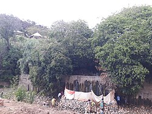
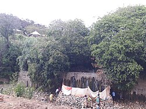
在大多数宗教中，水被视为净化剂。基督教、[ 235 ]印度教、伊斯兰教、犹太教、拉斯特法里运动、神道教、道教和威卡教等宗教都包含洗礼（ absolute ）。将人浸入水中（或洒水、注水）是基督教的核心圣礼（在那里称为洗礼）；在其他宗教中，它也是洗礼的一部分，包括伊斯兰教（Ghusl）、犹太教（mikvah）和锡克教（Amrit Sanskar ）。此外，许多宗教，包括伊斯兰教和犹太教，都会为死者举行纯净水沐浴仪式。在伊斯兰教中，除非没有水（参见Tayammum ） ，否则在大多数情况下，可以在用清水（ wudu ）清洗身体的某些部位后进行每日五次礼拜。在神道教中，几乎所有仪式都使用水来净化一个人或一个区域（例如，在misogi仪式中）。
在基督教中，圣水是指由牧师圣化的水，用于洗礼，祝福人、地方和物品，或作为驱除邪恶的手段。[ 236 ] [ 237 ]
哲学
 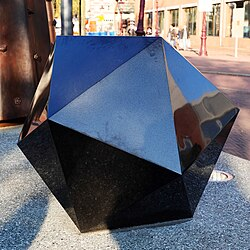
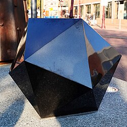
古希腊哲学家恩培多克勒将水视为四大古典元素之一（另三为火、土和气），并将其视为宇宙的基本物质。泰勒斯（亚里士多德将他描绘成一位天文学家和工程师）的理论认为，地球的密度比水大，是从水中产生的。泰勒斯是一位一元论者，他进一步认为万物皆由水构成。柏拉图认为水的形状是二十面体——与立方体状的地球相比，水更容易流动。[ 239 ]
四体液理论将水与痰联系起来，认为它们性寒湿。水是中国传统哲学中的五行之一（与土、火、木、金并列）。
一些传统且流行的亚洲哲学体系以水为典范。理雅各于1891年翻译的《道德经》指出：“上善若水，水之善也，利万物，而不争人所不欲，故近道也。”以及“天下莫柔弱于水，而攻坚莫能胜于水，莫能变于水。” [ 240 ] 《管子》在《水地》篇中进一步阐述了水的象征意义，宣称“人是水”，并将中国不同地区人民的自然品质归因于当地水资源的特征。[ 241 ]
民俗学
“活水”在日耳曼和斯拉夫民间故事中被用作使死者复活的手段。请注意格林童话《生命之水》以及俄罗斯人对活水和死水的二分法。青春之泉则代表着一种相关的概念，即据称可以延缓衰老的神奇水。
艺术与行动主义
在爱尔兰作家詹姆斯·乔伊斯1922 年创作的重要现代主义小说《尤利西斯》中，“伊萨卡”一章以 309 个问答的形式呈现，其中一个问答被称为“水之赞歌”。[ 242 ] :91 据理查德·E·马德斯所说，这首赞歌不仅仅是一串“单调的事实”，它的短语也像它们的主题一样，“涨落、隆起、膨胀、聚集和断裂，直到它们平息到结尾处‘瘟疫肆虐的沼泽，凋谢的花露水，残月下的死水’的平静之中”。[ 242 ] :79 这首赞歌被认为是《伊萨卡》中最引人注目的段落之一。文学评论家休·肯纳认为，它“完成了一项不可思议的壮举，将教科书里积累的所有杂乱无章的琐碎信息提升到了诗歌的高度”。[ 242 ] : 91 水这一文学母题体现了小说“永恒不变的生命”的主题，而这首赞美诗则代表了这一母题在小说中的顶峰。[ 242 ] : 91 以下是全文引用的赞美诗。[ 243 ]
布卢姆，这位爱水人、汲水人、挑水人，回到山上后，欣赏水中的什么呢？
它的普遍性；它的民主平等和始终如一地追求自身水平的本性；它在墨卡托投影的海洋中的浩瀚；它在太平洋巽他海沟超过 8,000 俄丈的深不可测；它的波浪和表面粒子的躁动不安，轮流造访它海岸的所有地点；它的单元的独立性；海况的多变性；它在平静时的流体静力学静止；它在小潮和大 潮时的流体动力学膨胀；它在毁灭后的沉降；它在北极和南极环极冰盖中的贫瘠性；它的气候和商业意义；它对全球陆地的三比一的优势；它在赤道以南回归线以下 所有地区以平方里格为单位的无可争辩的霸权；它的原始盆地的长期稳定性；它的黄褐色床层；它溶解和保持所有可溶物质的能力，包括数百万数以吨计的最珍贵的 金属；它对半岛和向下倾斜的海岬的缓慢侵蚀；它的冲积层；它的重量、体积和密度；它在泻湖和高地冰斗湖中的静谧性；它在热带、温带和寒带的颜色渐变；它在 大陆湖泊溪流和汇入大海的河流及其支流和跨洋洋流中的交通分支；墨西哥湾流、南北赤道流；它在海震、水龙卷、自流井、火山爆发、洪流、涡流、洪水、洪涝、 涌浪、流域、分水岭、间歇泉、瀑布、漩涡、大漩涡、洪水、暴雨中的暴力；它巨大的环绕地球的非水平曲线；它在泉水中的秘密和潜在的湿度，磁石占卜或湿度计 仪器，例如阿什敦门墙上的洞井、空气饱和度、露水蒸馏：其成分简单，由两部分氢和一部分氧组成；其治疗功效：其在死海水域的浮力；其在沟壑、沟壑、不完善 的水坝、船上漏洞中的持久渗透性；其清洁、解渴、防火、滋养植物的特性；其作为典范和典范的可靠性；其变形为蒸汽、薄雾、云、雨、雨夹雪、雪、冰雹；其在 刚性消防栓中的强度；其在湖泊、海湾、海湾、海湾、海峡、泻湖、环礁、群岛、海峡、峡湾、明奇、潮汐河口和海湾中的多种形态；其在冰川、冰山、浮冰：其在 水力磨坊、涡轮机、发电机、发电站、漂白厂、制革厂、打麻厂中的温顺作用；其在运河、河流（如果可以航行）中的实用性、浮动船坞和干船坞；其从利用潮汐或 水道逐层下降中获得的潜力；其海底动植物（无声的，畏光症（photophobe）在数量上（如果不是字面意义上的话）占地球居民的 90%：它无处不在，构成了人体的 90%：在湖泊沼泽、瘟疫沼泽、褪色的花水、残月中的死水潭中，它的恶臭令人作呕。
.jpeg?_x_tr_sl=en&_x_tr_tl=zh-CN&_x_tr_hl=zh-CN&_x_tr_pto=wapp) 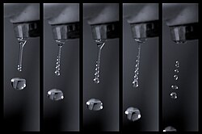
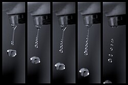
画家兼活动家弗雷德里卡·福斯特在纽约市圣约翰大教堂策划了《水的价值》展览[ 244 ] ，这是大教堂为期一年的关于人类对水的依赖的倡议的基石。[ 245 ] [ 246 ]这是大教堂有史以来规模最大的展览[ 247 ] ，展出了40多位艺术家的作品，包括珍妮·霍尔泽、罗伯特·隆戈、马克·罗斯科、威廉·肯特里奇、艾普丽尔·戈尔尼克、琪琪·史密斯、帕特·斯泰尔、爱丽丝·道尔顿·布朗、特雷西塔·费尔南德斯和比尔·维奥拉。[ 248 ] [ 249 ]福斯特创作了“思考水” [ 250 ] [需要完整引文]，这是一个以水为主题或媒介的生态艺术家团体。成员包括 Basia Irland、[ 251 ] [需要完整引用] Aviva Rahmani、Betsy Damon、Diane Burko、Leila Daw、Stacy Levy、Charlotte Coté、[ 252 ] Meridel Rubenstein和Anna Macleod。
为纪念联合国将享有水和卫生设施列为一项人权十周年，慈善机构“水援助”委托了十位视觉艺术家展示清洁水对人们生活的影响。[ 253 ] [ 254 ]
一氧化二氢模仿秀
“一氧化二氢”在技术上是正确的，但很少使用。这个名字曾被用于一系列嘲讽科学文盲的恶作剧和玩笑中。这始于1983年，当时密歇根州杜兰德的一家报纸刊登了一篇愚人节文章。这篇虚假故事讲述了人们对该物质的安全性担忧。[ 255 ]
音乐
许多佛罗里达说唱歌手把“水”这个词当作一种口头禅或即兴发挥。这样做的说唱歌手包括BLP Kosher和Ski Mask the Slump God。[ 256 ]更进一步的是，一些说唱歌手甚至创作了整首歌来纪念佛罗里达的水，比如 2023 年Danny Towers 的歌曲《佛罗里达水》。[ 257 ]还有一些人创作了整首歌来纪念整个水，比如XXXTentacion和 Ski Mask the Slump God 的热门歌曲《H2O》。
参见
- 水的概要 ——水的概述和专题指南
- 水（数据页） ——水的化学数据页收集了水的化学和物理特性。
- 恐水症 ——对水持续且异常的恐惧
- 蓝色屋顶 ——用于临时蓄水的建筑屋顶
- 集水器 ——径流收集或引导装置
- 享有水和卫生设施的人权
- 水力发电 ——水力发电
- 瀑布列表
- 洋流能 ——从洋流中提取能量
- 海洋能 ——来自海洋的能源
- 姆潘巴效应 ——热水比冷水结冰更快的自然现象
- 口服补液疗法 ——用于预防和治疗脱水的一种补液疗法
- 渗透力 ——海水和河水之间盐浓度差异产生的能量
- 氢氧混合气 ——氢气和氧气的爆炸性混合物
- 水的性质 ——纯水的物理和化学性质
- 雨水箱 ——收集和储存雨水的容器
- 口渴 ——动物渴望饮用液体
- 潮汐能 ——将潮汐能转化为有用能源的技术
- 水夹点分析
- 波浪能 ——利用风浪传输能量，并捕获该能量以做有用功
- 滤水器 ——去除水中杂质的装置
- 水热回收 ——使用热交换器回收能源并重复使用废水中的热量
- 水循环淋浴 ——使用盆和泵重复使用淋浴水的淋浴
- 水敏感城市设计 ——城市水循环综合方法
笔记
参考
- ^ “命名分子化合物”。www.iun.edu 。原件存档于2018年 9 月 24 日。检索日期：2018 年10 月 1 日。
有时，这些化合物有通用名称或俗名（例如，H2O 代表“水”），也有系统名称（例如，H2O 代表一氧化二氢）。
- ^ “水的定义”。韦氏词典。原著存档于 2017 年 8 月 13 日。检索日期：2019 年4 月 21 日。
- ^ Leigh, Favre & Metanomski 1998 年，第 99 页。
- ^ Braun CL ， Smirnov SN ( 1993年 8 月 1 日)。“为什么水是蓝色的？” (PDF)。化学教育杂志。70 (8): 612。Bibcode ：1993JChEd..70..612B。doi：10.1021/ed070p612。ISSN 0021-9584。原件存档(PDF)于 2019年12 月1日。检索日期：2023 年9月 13 日。
- ^ a b c跳转至： Tanaka M, Girard G, Davis R, Peuto A, Bignell N (2001年8月)。“根据近期实验报告，推荐0°C至40°C之间水的密度表”。《计量学》。38 ( 4): 301–309。Bibcode：2001Metro..38..301T。doi ：10.1088/0026-1394/38/4/3。
- ^ Lemmon EW、Bell IH、Huber ML、McLinden MO (1997)。“流体系统的热物理性质”。载于 Linstrom P 和 Mallard W 编。NIST化学网络手册，NIST 标准参考数据库编号 69。美国国家标准与技术研究院。doi : 10.18434 /T4D303。原件存档于 2023 年 10 月 23 日。检索日期：2023 年10 月 17 日。
- ^ Lide 2003，第 6 节“冰和过冷水的性质”。
- ^ a b c跳转至： Anatolievich KR. “物质的性质：水”。原著存档于 2014 年 6 月 2 日。检索日期：2014 年6 月 1 日。
- ^ Lide 2003，第 6 节中 0 至 370°C 范围内水的蒸气压。
- ^ Lide 2003，第 8 章：无机酸和碱的解离常数。
- ^ Weingärtner 等人。 2016年，第。 13.
- ^ “水的pKa值是多少”。加州大学戴维斯分校。2015年8月9日。原著存档于2016年2月14日。 2016年4月9日检索。
- ^ Silverstein TP，Heller ST（2017 年4月17日）。 “本科课程中的pKa值：水的真实pKa值是多少？”。《化学教育杂志》。94 (6): 690–695。Bibcode ： 2017JChEd..94..690S。doi ： 10.1021 /acs.jchemed.6b00623 。
- ^ Ramires ML、Castro CA、Nagasaka Y、Nagashima A、Assael MJ、Wakeham WA（1995 年 5 月 1 日）。 “水导热系数的标准参考数据”。物理化学参考数据杂志。24 (3)：1377–1381。书目代码：1995JPCRD..24.1377R。DOI：10.1063/1.555963。ISSN 0047-2689。
- ^ Lide 2003 , 8—水溶液的浓缩特性：密度、折射率、凝固点下降和粘度。
- ^ Lide 2003，6.186。
- ^ a b c d跳转至： 水，Linstrom, Peter J.；Mallard, William G. (eds.)；NIST 化学 WebBook，NIST 标准参考数据库编号 69，美国国家标准与技术研究院，盖瑟斯堡 (MD)
- ^ Lide 2003 , 9—偶极矩。
- ^ GHS: PubChem 962 存档于2023-07-28 在Wayback Machine
- ^ “水问答：为什么水是‘万能溶剂’？”。水科学学院。美国地质调查局，美国内政部。2019 年 6 月 20 日。原件存档于 2021 年 2 月 6 日。2021年1 月 15 日检索。
- ^ “10.2：水中的杂化轨道”。化学自由文本。2020年3月18日。原件存档于2022年7月30日。 2021年4月11日检索。
- ^ Butler J. “地球——导论——风化”。休斯顿大学。原著存档于2023年1月30日。检索日期：2023年1月30日。
需要注意的是，地球环境接近三相点，水、蒸汽和冰都可以存在于地表。
- ^ a b跳转至： “地球上有多少水？”。水科学学院。美国地质调查局，美国内政部。2019 年 11 月 13 日。原件存档于 2022 年 6 月 9 日。2022年6 月 8 日检索。
- ^ a b跳转至： Gleick, PH 编（1993 年）。《水危机：世界淡水资源指南》。牛津大学出版社，第 13 页，表 2.1“地球上的水储量”。原著存档于 2013 年 4 月 8 日。
- ^ 气候系统中的水蒸气 ，特别报告，[AGU]，1995年12月（链接于2007年4月）。重要水资源，存档于2008年2月20日，联合国环境规划署。
- ^ Baroni, L., Cenci, L., Tettamanti, M., Berati, M. (2007)。 “评估不同饮食模式与不同食品生产系统相结合对环境的影响”。《欧洲临床营养学杂志》。61 (2): 279– 286。doi : 10.1038/ sj.ejcn.1602522。ISSN 0954-3007。PMID 17035955。
- ^ Troell M、Naylor RL、Metian M、Beveridge M、Tyedmers PH、Folke C 等人（2014 年 9 月 16 日）。“水产养殖是否增强了全球粮食系统的韧性？”。美国国家科学院院刊。111 ( 37 ) : 13257–13263。Bibcode：2014PNAS..11113257T。doi ：10.1073/ pnas.1404067111。ISSN 0027-8424。PMC 4169979。PMID 25136111。
- ^ “水（动词）”。www.etymonline.com。在线词源词典。原著存档于 2017 年 8 月 2 日。2017年5 月 20 日检索。
- ^ Luger R, Barnes R (2015 年 2 月)。“ M型矮星宜居带行星的极端水分流失和非生物氧气积累”。天体生物学。15 ( 2 ) : 119–143。arXiv : 1411.7412。Bibcode ： 2015AsBio..15..119L。doi ： 10.1089 / ast.2014.1231。ISSN 1531-1074。PMC 4323125。PMID 25629240 。
- ^ Pepin RO（1991 年7月）。“论类地行星大气与陨石挥发物的起源和早期演化”。伊卡洛斯。92 (1): 2–79。Bibcode ：1991Icar ... 92 .... 2P。doi：10.1016 / 0019-1035 (91)90036 - s。ISSN 0019-1035。
- ^ Zahnle KJ 、 Gacesa M、Catling DC（2019 年 1 月）。“奇怪的信使：氙气讲述的地球氢原子新历史” 。地球化学与宇宙化学学报。244 ： 56–85。arXiv ：1809.06960。Bibcode：2019GeCoA.244 ... 56Z。doi ： 10.1016 / j.gca.2018.09.017。ISSN 0016-7037。S2CID 119079927。
- ^ Canup RM ，Asphaug E（2001年8 月）。 “地球形成末期附近一次巨大撞击导致月球起源” 。《自然》。412 ( 6848 ) : 708–712。Bibcode ： 2001Natur.412..708C。doi ： 10.1038 / 35089010。ISSN 0028-0836。PMID 11507633。S2CID 4413525 。
- ^ Cuk M , Stewart ST (2012年10月17日)。“快速旋转的地球形成月球：巨大撞击后共振减旋” 。《科学》。338 ( 6110 ) : 1047–1052。Bibcode ：2012Sci ... 338.1047C。doi：10.1126 /science.1225542。ISSN 0036-8075。PMID 23076099。S2CID 6909122 。
- ^ Ding C, He Y, Yin J, Yao W, Zhou D, Wang J (2015年2月18日)。“低气压下沸点、闪点及最低可燃极限的压力依赖性研究”。工业与工程化学研究。54 (6): 1899– 1907。doi : 10.1021/ie503383a。ISSN 0888-5885。
- ^ Sleep NH、Zahnle K、Neuhoff PS (2001)。“地球早期温和地表条件的形成”。美国国家科学院院刊。98 ( 7 ) : 3666–3672。Bibcode：2001PNAS...98.3666S。doi ：10.1073 / pnas.071045698。PMC 31109。PMID 11259665。
- ^ a b跳转至： Pinti DL, Arndt N (2014)，《海洋起源》，天体生物学百科全书，Springer Berlin Heidelberg， 第 1-5页，doi：10.1007/978-3-642-27833-4_1098-4，ISBN 978-3-642-27833-4
- ^ Cates N ， Mojzsis S（2007年3月）。“魁北克北部努夫武阿吉图克表壳带的37.5亿年前表壳岩”。地球与行星科学通报。255 （1–2）：9–21。Bibcode：2007E&PSL.255....9C。doi：10.1016 / j.epsl.2006.11.034。ISSN 0012-821X。
- ^ O'Neil J , Carlson RW , Paquette JL, Francis D (2012年11 月)。“努夫瓦吉图克绿岩带的形成时代和变质历史” （PDF）。前寒武纪研究。220–221 ：23–44。Bibcode：2012PreR..220...23O。doi：10.1016 /j.precamres.2012.07.009。ISSN 0301-9268 。
- ^ Piani, Laurette (2020年8月28日)。“地球的水可能源自类似于顽火辉石球粒陨石的物质”。《科学》。369 (6507): 1110–1113。Bibcode ： 2020Sci ...369.1110P。doi：10.1126 /science.aba1948。PMID 32855337。S2CID 221342529。检索日期：2020年8月28日。
- ^ 圣路易斯华盛顿大学（2020年8月27日）。“陨石研究表明地球自形成以来可能一直处于湿润状态——顽火辉石球粒陨石曾被认为是‘干燥的’，但实际上它们所含的水足以填满海洋——甚至更多。 ” ——EurekAlert!。检索日期：2020年8月28日。
- ^ 美国科学促进会(2020年8月27日)。“陨石中意外丰富的氢元素揭示了地球水的起源”。EurekAlert !。检索日期：2020年8月28日。
- ^ Wilde S, Valley J, Peck W, Graham C (2001)。“碎屑锆石证明4.4纳吉里年前地球上存在大陆地壳和海洋” ( PDF)。《自然》。409 (6817): 175–8。Bibcode：2001Natur.409..175W。doi：10.1038/ 35051550。PMID 11196637。S2CID 4319774 。
- ^ 澳大利亚国立大学 - 地球科学研究院 - 澳大利亚国立大学理学院 - 哈里森分校。Ses.anu.edu.au。原著存档于 2006 年 6 月 21 日。2009年8 月 20 日检索。
- ^ ANU - OVC - 媒体 - 媒体发布 - 2005 - 十一月 - 181105HARRISONCONTINENTS。Info.anu.edu.au。2009年8月20日检索。
- ^ “寒冷的早期地球”。Geology.wisc.edu。原著存档于2013年6月16日。 2009年8月20日检索。
- ^ Valley JW、Peck WH、King EM 和 Wilde SA (2002)。“寒冷的早期地球”。地质学。30 ( 4 ): 351。Bibcode ：2002Geo....30..351V。doi：10.1130 / 0091-7613(2002 ) 030<0351:ACEE>2.0.CO ; 2。ISSN 0091-7613 。
- ^ Nebel O, Rapp RP, Yaxley GM (2014年3月1日)。“碎屑锆石在冥古代地壳研究中的作用”。Lithos。190–191 : 313–327。doi : 10.1016/j.lithos.2013.12.010。ISSN 0024-4937。
- ^ Chang K (2008年12月2日)。“早期地球的新图景”。《纽约时报》 。 2010年5月20日检索。
- ^ Greenwood NN，Earnshaw A（1997）。元素化学（第二版）。Butterworth -Heinemann出版社，第620页。ISBN 978-0-08-037941-8。
- ^ “水，万能溶剂”。美国地质调查局。原件存档于2017年7月9日。 2017年6月27日检索。
- ^ “水的溶剂特性”。可汗学院。
- ^ Reece JB（2013）。《坎贝尔生物学》（第10版）。Pearson出版社，第48页。ISBN 978-0-321-77565-8。
- ^ Reece JB（2013）。《坎贝尔生物学》（第10版）。Pearson出版社，第44页。ISBN 978-0-321-77565-8。
- ^ Leigh GJ, Favre HA, Metanomski WV (1998).化学命名原则：IUPAC推荐指南(PDF) . 牛津: Blackwell Science. ISBN 978-0-86542-685-6。OCLC 37341352。 原著(PDF)存档于 2011 年 7 月 26日。
- ^ PubChem。“水”。美国国家生物技术信息中心。原著存档于2018年8月3日。 2020年3月25日检索。
- ^ a b跳转至： Belnay L. “水循环” （PDF）。批判性思维活动。地球系统研究实验室。原件存档（PDF）于 2020 年 9 月 20 日。检索日期： 2020 年3 月 25 日。
- ^ a b跳转至： Oliveira MJ (2017).平衡热力学. Springer. 第 120–124页. ISBN 978-3-662-53207-2。原件存档于 2021 年 3 月 8 日。检索日期：2020 年3 月 26 日。
- ^ “什么是密度？”。梅特勒-托利多。原版存档于2022年11月11日。检索日期：2022年11月11日。
- ^ a b跳转至： Ball P (2008)。“水——一个永恒的谜团”。《自然》。452 (7185): 291–2。Bibcode ： 2008Natur.452..291B。doi ：10.1038 /452291a。PMID 18354466。S2CID 4365814。原著存档于 2016 年 11 月17日。2016年11月15日检索。
- ^ Kotz JC, Treichel P, Weaver GC (2005).化学与化学反应性. Thomson Brooks/Cole出版社. ISBN 978-0-534-39597-1。
- ^ Ben-Naim A , Ben-Naim R 等 (2011).爱丽丝梦游仙境。doi : 10.1142 / 8068。ISBN 978-981-4338-96-7。
- ^ Matsuoka N ，Murton J（2008）。 “霜冻风化：最新进展和未来方向”。多年冻土和冰缘过程。19 (2 ) : 195–210。Bibcode：2008PPPr...19..195M。doi：10.1002 / ppp.620。S2CID 131395533。
- ^ Wiltse B. “冰层之下的一瞥：冬季湖泊生态”。奥萨布尔河协会。原著存档于 2020 年 6 月 19 日。检索日期：2020 年4 月 23 日。
- ^ a b跳转至： Chen Z (2010年4月21日)。“水中抗磁性的测量”。hdl ：11299/90865。原著存档于2022年1月8日。检索日期：2022年1月8日。
- ^ Wells S (2017年1月21日)。“雪花之美与科学”。史密森尼科学教育中心。原著存档于2020年3月25日。检索日期：2020年3月25日。
- ^ Fellows P (2017)。“冷冻干燥和冷冻浓缩”。食品加工技术：原理与实践（第4版）。肯特：Woodhead Publishing/Elsevier Science。第 929–940页。ISBN 978-0-08-100523-1. OCLC 960758611。
- ^ Siegert MJ、Ellis-Evans JC、Tranter M、Mayer C、Petit JR、Salamatin A 等人（2001 年 12 月）。“沃斯托克湖及其他南极冰下湖泊的物理、化学和生物过程” 。《自然》。414 ( 6864 )：603–609。Bibcode ： 2001Natur.414..603S。doi ： 10.1038 / 414603a。PMID 11740551。S2CID 4423510 。
- ^ Davies B. “南极冰下湖泊”。南极冰川。原件存档于 2020 年 10 月 3 日。检索日期：2020 年3 月 25 日。
- ^ Masterton WL，Hurley CN（2008年）。《化学：原理与反应》（第6版）。Cengage Learning。第230页。ISBN 978-0-495-12671-3。原件存档于 2021 年 3 月 8 日。检索日期：2020 年4 月 3 日。
- ^ Peaco J. “黄石公园课程计划：黄石间歇泉如何喷发”。黄石国家公园：美国国家公园管理局。原件存档于2020年3月2日。检索日期： 2020年4月5日。
- ^ Brahic C. “发现：地球上最热的水”。《新科学家》。原著存档于 2020 年 5 月 9 日。检索日期：2020 年4 月 5 日。
- ^ 美国农业部食品安全检验局。“高海拔烹饪与食品安全” (PDF) 。原版(PDF)存档于 2021 年 1 月 20 日。检索日期：2020 年4 月 5 日。
- ^ “压力烹饪——食品科学”。探索博物馆。2019年9月26日。原著存档于2020年6月19日。 2020年4月21日检索。
- ^ Allain R (2018年9月12日)。“是的，你可以在室温下煮沸水。方法如下。” 《连线》。原版存档于2020年9月28日。检索日期：2020年4月5日。
- ^ Murphy DM , Koop T (2005年4月1日)。“冰和过冷水蒸气压在大气中的应用综述”。皇家气象学会季刊。131 (608): 1540。Bibcode ：2005QJRMS.131.1539M。doi：10.1256/qj.04.94。S2CID 122365938。原著存档于2020年8月18日。检索日期：2020年8月31日。
- ^ 国际度量衡局（2006年）。国际单位制（SI）（PDF）（第8版）。国际度量衡局，第114页。ISBN： 92-822-2213-6.原件存档 (PDF)于 2017 年 8 月 14 日。
- ^ “《国际单位制手册》第 9 版”。国际计量局。2019 年。原版存档于 2021 年 4 月 19 日。2019年5 月 20 日检索。
- ^ Wagner W, Pruß A (2002 年6月)。“用于一般和科学用途的普通水物质热力学性质的IAPWS 1995公式”。物理和化学参考数据杂志。31 (2): 398。doi : 10.1063 /1.1461829。
- ^ Weingärtner H，Franck EU（2005 年 4 月 29 日）。 “超临界水作为溶剂”。应用化学国际版。44（18）：2672–2692。doi ： 10.1002 / anie.200462468 。PMID 15827975。
- ^ Adschiri T, Lee YW, Goto M, Takami S (2011). “利用超临界水合成绿色材料”。绿色化学。13 (6): 1380。doi : 10.1039 /c1gc15158d 。
- ^ Murray BJ 、 Knopf DA、Bertram AK (2005)。“在与地球大气相关的条件下立方体冰的形成”。《自然》。434 (7030): 202–205。Bibcode ： 2005Natur.434..202M。doi ：10.1038 / nature03403。PMID 15758996。S2CID 4427815。
- ^ Salzmann CG ( 2019年2月14日)。“水相图实验探索的进展”。《化学物理学报》。150 (6): 060901。arXiv : 1812.04333。Bibcode ： 2019JChPh.150f0901S。doi ：10.1063 / 1.5085163。PMID 30770019。
- ^ Sokol J (2019年5月12日)。“一种奇异的水形态可能存在于整个宇宙中”。《连线》。原著存档于2019年5月12日。检索日期：2021年9月1日。
- ^ Millot M、Coppari F、Rygg JR、Barrios AC、Hamel S、Swift DC 等人（2019 年）。“冲击压缩超离子水冰的纳秒 X 射线衍射” 。《自然》。569 (7755)。Springer：251–255。Bibcode：2019Natur.569..251M。doi：10.1038/s41586-019-1114-6。OSTI 1568026。PMID 31068720。S2CID 148571419。原著存档于 2023年7月9日。检索日期：2024 年3月5日。
- ^ Peplow M (2015年3月25日)。 “石墨烯三明治结构创造出新型冰”。《自然》。doi : 10.1038/nature.2015.17175。S2CID 138877465 。
- ^ Maestro LM、Marqués MI、Camarillo E、Jaque D、Solé JG、Gonzalo JA 等 (2016 年 1 月 1 日)。“论液态水中两种状态的存在：对生物和纳米系统的影响” (PDF)。国际纳米技术杂志。13 ( 8–9 ): 667–677。Bibcode：2016IJNT...13..667M。doi：10.1504 /IJNT.2016.079670。S2CID 5995302。原件存档 (PDF) 于 2023 年 11 月 15 日。检索日期：2024年3月5日。
- ^ Mallamace F, Corsaro C, Stanley HE (2012 年 12 月 18 日)。“液态水异常行为起源处的奇异热力学一致温度” 。科学报告。2 ( 1 ) : 993。Bibcode ：2012NatSR...2..993M。doi ： 10.1038 / srep00993。PMC 3524791。PMID 23251779。
- ^ Perakis F, Amann-Winkel K, Lehmkühler F, Sprung M, Mariedahl D, Sellberg JA 等人（2017年6月26日）。“非晶态冰高密度至低密度转变过程中的扩散动力学” 。《美国国家科学院院刊》。13 ( 8–9 ): 667–677。Bibcode：2017PNAS..114.8193P。doi：10.1073/ pnas.1705303114。PMC 5547632。PMID 28652327。
- ^ Zocchi D, Wennemuth G, Oka Y (2017 年 7 月)。“哺乳动物味觉系统中水检测的细胞机制” (PDF)。《自然神经科学》。20 (7): 927–933。doi : 10.1038/nn.4575。PMID 28553944。S2CID 13263401。原著存档于 2024 年 3 月 5 日。检索日期：2024年1月 27日。
- ^ Edmund T. Rolls（2005）。《情绪的解释》。牛津大学出版社，医学版 。ISBN 978-0198570035。
- ^ R. Llinas, W. Precht (2012)，《青蛙神经生物学：手册》。施普林格科学与商业媒体。ISBN 978-3642663161
- ^ Candau J (2004)。“嗅觉体验：常数与文化变量”。水科学与技术。49 (9): 11–17。Bibcode：2004WSTec..49...11C。doi：10.2166 /wst.2004.0522。PMID 15237601。原著存档于 2016 年 10 月 2 日。检索日期：2016年9月28日。
- ^ Braun CL, Sergei N. Smirnov (1993)。“为什么水是蓝色的？”。化学教育杂志。70 (8): 612。Bibcode ： 1993JChEd..70..612B。doi ： 10.1021 /ed070p612。原著存档于2012年3月20日。检索日期： 2007年4月21日。
- ^ Nakamoto K (1997).无机及配位化合物的红外和拉曼光谱，A部分：无机化学中的理论和应用(第5版). 纽约: Wiley. 第170页. ISBN 0-471-16394-5。
- ^ Ball 2001，第 168 页
- ^ Franks 2007，第 10 页
- ^ “水的物理化学”。密歇根州立大学。原著存档于2020年10月20日。检索日期：2020年9月11日。
- ^ Ball 2001，第 169 页
- ^ Isaacs ED, Shukla A, Platzman PM, Hamann DR, Barbiellini B, Tulk CA (2000年3月1日)。“冰中氢键共价性的康普顿散射证据”。《固体物理与化学杂志》。61 (3): 403–406。Bibcode：2000JPCS...61..403I。doi ：10.1016/S0022-3697(99)00325 - X。
- ^ Campbell NA, Williamson B, Heyden RJ (2006).生物学：探索生命. 波士顿: Pearson Prentice Hall. ISBN 978-0-13-250882-7。原著存档于 2014 年 11 月 2 日。检索日期：2008 年11 月 11 日。
- ^ “在线水热容”。Desmos （俄语）。原著存档于2022年6月6日。检索日期：2022年6月3日。
- ^ Ball P (2007 年 9 月 14 日)。“燃烧水及其他神话”。News @nature。doi：10.1038 /news070910-13。S2CID 129704116。原著存档于 2009 年 2 月 28 日。2007年9月14 日检索。
- ^ Fine RA，Millero FJ (1973)。“水的压缩性与温度和压力的关系”。《化学物理学报》。59 ( 10 ): 5529。Bibcode ：1973JChPh..59.5529F。doi ： 10.1063 /1.1679903。
- ^ 英国国家物理实验室，海水声音吸收计算， 2016年10月3日 存档于Wayback Machine。在线网站，最后访问于2016年9月28日。
- ^ Gleick PH 编（1993）。《水危机：世界淡水资源指南》。牛津大学出版社，第 15 页，表 2.3。原著存档于 2013 年 4 月 8 日。
- ^ Ben-Naim A, Ben-Naim R (2011).爱丽丝梦游仙境。世界科学出版社。第 31 页。doi : 10.1142 /8068。ISBN为 ISBN 10.1142/8068 。 978-981-4338-96-7。
- ^ “水资源”。大英百科全书。原著存档于 2022 年 10 月 2 日。检索日期：2022 年5 月 17 日。
- ^ Gleick PH (1993).水危机。纽约：牛津大学出版社。第 13页。ISBN 0-19-507627-3。
- ^ Wada Y, Van Beek LP, Bierkens MF (2012)。“不可持续的地下水持续灌溉：全球评估”。水资源研究。48 ( 6 ): W00L06。Bibcode ：2012WRR ....48.0L06W。doi：10.1029 /2011WR010562。
- ^ “催化剂有助于分解水：植物”。AskNature 。原版存档于2020年10月28日。检索日期：2020年9月10日。
- ^ Hall D (2001)。《光合作用》，第六版。剑桥大学。ISBN 0-521-64497-6。原件存档于 2023 年 10 月 5 日。检索日期：2023 年8 月 26 日。
- ^ “论水上”。欧洲投资银行。原版存档于 2020 年 10 月 14 日。检索日期：2020 年10 月 13 日。
- ^ Jammi R (2018年3月13日)。“24亿人缺乏充足的卫生设施。6亿人缺乏安全饮用水。我们能在2030年前解决这个问题吗？”。世界银行集团。原件存档于2020年10月14日。检索日期：2020年10月13日。
- ^ “废水资源回收可解决水资源安全问题并减少碳排放”。欧洲投资银行。原件存档于2022年8月29日。检索日期：2022年8月29日。
- ^ “‘生命之水’国际行动十年（2005-2015）。重点领域：水资源短缺”。联合国。原件存档于2020年5月23日。检索日期： 2022年8月29日。
- ^ “世界粮食和农业土地与水资源状况” (PDF)。原件存档于2022年8月31日(PDF) 。检索日期：2022年8月30日。
- ^ 世界卫生组织。安全饮用水与全球健康。世界卫生组织。2008年6月25日。原著存档于2010年12月24日。 2010年7月25日检索。
- ^ 联合国环境规划署国际环境署（2002）。环保废水和雨水管理技术：国际资料汇编。IWA。ISBN 978-1-84339-008-4. OCLC 49204666。
- ^ Ravindranath NH，Sathaye JA (2002)。气候变化与发展中国家。施普林格。国际标准书号 978-1-4020-0104-8. OCLC 231965991。
- ^ “人均取水量”。我们的数据世界。原版存档于2020年3月12日。检索日期：2020年3月6日。
- ^ “WBCSD 水资源事实与趋势” 。原版存档于2012年3月1日。 2010年7月25日检索。
- ^ Dieter CA、Maupin MA、Caldwell RR、Harris MA、Ivahnenko TI 和 Lovelace JK 等人 (2018)。“2015 年美国用水量估算”。通函。美国地质调查局。第 76 页。doi : 10.3133 /cir1441。原著存档于 2019 年 4 月 28 日。检索日期： 2019 年5 月 21 日。
- ^ Gleick PH，Palaniappan M（2010）。“峰值水量”（PDF）。美国国家科学院院刊。107 (125 ) : 11155–11162。Bibcode：2010PNAS..10711155G。doi：10.1073/pnas.1004812107。PMC 2895062。PMID 20498082。原件存档 (PDF) 于 2011年11月8日。2011年10月11日检索。
- ^ 联合国新闻稿 POP/952 (2007年3月13日)。 “到2050年，世界人口将增加25亿”。已于2014年7月27日存档于Wayback Machine。
- ^ Molden, D. (编辑)。食物之水，生命之水：农业用水管理综合评估。Earthscan /IWMI，2007年。
- ^ Chartres, C. 和 Varma, S. (2010)《水资源匮乏：从丰富到稀缺以及如何解决世界水资源问题》。金融时报出版社（美国）。
- ^ Chapagain AK、Hoekstra AY、Savenije HH、Guatam R（2005年9月）。“棉花消费的水足迹” （PDF）。IHE代尔夫特水教育研究所。原件存档（PDF）于2019年3月26日。检索日期：2019年10月24日。
- ^ “Décret relatif aux poids et aux mesures”（法语，《关于度量衡的法令》）。18 germinal an 3（1795年4月7日）。已于2013年2月25日存档于Wayback Machine。quartier-rural.org
- ^ 这里“L'Histoire Du Mètre, La Détermination De L'Unité De Poids” 存档于2013年7月25日 at the Wayback Machine .历史.du.metre.free.fr
- ^ “回复：人体中水占比是多少？” 已存档于 2007 年 11 月 25 日，存档于Wayback Machine Jeffrey Utz，医学博士，MadSci Network
- ^ “健康水生活”。BBC健康。原版存档于 2007 年 1 月 1 日。2007年2 月 1 日检索。
- ^ Rhoades RA，Tanner GA（2003）。《医学生理学》（第二版）。巴尔的摩：Lippincott Williams & Wilkins出版社。ISBN： 978-0-7817-1936-0. OCLC 50554808。
- ^ Noakes TD, Goodwin N, Rayner BL 等人 (1985)。 “水中毒：耐力训练中可能出现的并发症”。运动医学与科学。17 (3): 370–375。doi : 10.1249 / 00005768-198506000-00012。PMID 4021781。
- ^ Noakes TD, Goodwin N, Rayner BL, Branken T, Taylor RK (2005)。“水中毒：1985 年耐力训练中可能出现的并发症”。荒野与环境医学。16 (4): 221–227。doi : 10.1580 / 1080-6032 ( 2005 ) 16 [221:WIAPCD]2.0.CO ; 2。PMID 16366205。S2CID 28370290。
- ^ Valtin H. (2002) 。 “每天至少喝八杯水。”真的吗？“8×8”有科学依据吗？ （PDF）。美国生理学杂志。调节、整合和比较生理学。283 ( 5 ) : R993 – R1004。doi : 10.1152/ajpregu.00365.2002。PMID 12376390。S2CID 2256436。原版( PDF)存档于2019年2月22日。
- ^ Stookey JD、Constant F、Popkin BM、Gardner CD（2008年11月）。“对于正在节食 的超重女性，饮水与体重减轻相关，且与饮食和活动无关”。《肥胖》。16 ( 11): 2481– 2488。doi : 10.1038/ oby.2008.409。PMID 18787524。S2CID 24899383。
- ^ “喝水能控制体重？临床试验证实简单食欲控制方法有效”。《科学日报》。2010年8月23日。原著存档于2017年7月7日。 2017年5月14日检索。
- ^ Dubnov-Raz G、Constantini NW、Yariv H、Nice S、Shapira N（2011 年 10 月）。“饮水对超重儿童静息能量消耗的影响”。国际肥胖杂志。35 ( 10): 1295– 1300。doi : 10.1038/ijo.2011.130。PMID 21750519。S2CID 27561994。
- ^ Dennis EA、Dengo AL、Comber DL 等（2010 年 2 月）。“在中老年人低热量饮食干预期间，饮水可促进体重减轻” 。《肥胖》。18 ( 2 ): 300–307。doi : 10.1038 / oby.2009.235。PMC 2859815。PMID 19661958。
- ^ Vij VA, Joshi AS (September 2013). "Effect of 'water induced thermogenesis' on body weight, body mass index and body composition of overweight subjects". Journal of Clinical and Diagnostic Research. 7 (9): 1894–1896. doi:10.7860/JCDR/2013/5862.3344. PMC 3809630. PMID 24179891.
- ^ Muckelbauer R, Sarganas G, Grüneis A, Müller-Nordhorn J (August 2013). "Association between water consumption and body weight outcomes: a systematic review". The American Journal of Clinical Nutrition. 98 (2): 282–299. doi:10.3945/ajcn.112.055061. PMID 23803882. S2CID 12265434.
- ^ "Water, Constipation, Dehydration, and Other Fluids". Archived 4 March 2015 at the Wayback Machine. Science Daily. Retrieved on 28 September 2015.
- ^ Food and Nutrition Board, National Academy of Sciences. Recommended Dietary Allowances. National Research Council, Reprint and Circular Series, No. 122. 1945. pp. 3–18.
- ^ Institute of Medicine, Food Nutrition Board, Standing Committee on the Scientific Evaluation of Dietary Reference Intakes, Panel on Dietary Reference Intakes for Electrolytes and Water (2005). 4 Water | Dietary Reference Intakes for Water, Potassium, Sodium, Chloride, and Sulfate. The National Academies Press. doi:10.17226/10925. ISBN 978-0-309-09169-5. Archived from the original on 13 January 2017. Retrieved 11 January 2017.
- ^ "Water: How much should you drink every day?". Mayo Clinic. Archived from the original on 4 December 2010. Retrieved 25 July 2010.
- ^ Conquering Chemistry (4th ed.), 2008
- ^ Maton A, Hopkins J, McLaughlin CW, Johnson S, Warner MQ, LaHart D, et al. (1993). Human Biology and Health. Englewood Cliffs, New Jersey: Prentice Hall. ISBN 978-0-13-981176-0. OCLC 32308337.
- ^ Unesco (2006). Water: a shared responsibility. Berghahn Books. p. 125. ISBN 978-1-84545-177-6.
- ^ Bockmühl DP, Schages J , Rehberg L (2019)。“医疗保健及其他领域的洗衣和纺织品卫生”。微生物细胞。6 ( 7 ): 299– 306。doi : 10.15698/ mic2019.07.682。ISSN 2311-2638。PMC 6600116。PMID 31294042。
- ^ Moyer MW (2023年10月23日)。“你真的需要每天洗澡吗？”。《纽约时报》。ISSN 0362-4331 。检索日期：2024年4月22日。
- ^ Hadaway A (2020年1月2日)。“洗手：清洁双手拯救生命”。《互联网消费者健康杂志》。24 (1): 43–49。doi : 10.1080/15398285.2019.1710981。ISSN 1539-8285。
- ^ Ettinger J (2018年10月22日)。“你可能洗头太多了（真的！）”。有机权威。检索日期：2024年4月22日。
- ^ Petersen EE (2005年12月7日)。妇产科感染：教科书和图谱。Thieme出版社。第 6-13页。ISBN 978-3-13-161511-4。
- ^ Stopford M (1997年1月1日)。《海洋经济学》。心理学出版社。第10页。ISBN 9780415153102。
- ^ “美国用水情况”，国家地图集。 2009年8月14日存档于Wayback Machine。
- ^ “材料安全数据表：生石灰” （PDF）。Lhoist North America。2012年8月6日。原件存档(PDF)于2016年7月5日。检索日期：2019年10月24日。
- ^ Duff LB (1916)。家政课程：第一部分。Whitcomb & Barrows。原著存档于2021年4月14日。 2017年12月3日检索。
- ^ a b跳转至： Vaclavik VA, Christian EW (2007).食品科学精要. Springer出版社. ISBN 978-0-387-69939-4。原件存档于 2021 年 4 月 14 日。检索日期：2020 年8 月 31 日。
- ^ a b跳转至： DeMan JM (1999).食品化学原理. Springer出版社. ISBN 978-0-8342-1234-3。原件存档于 2021 年 4 月 14 日。检索日期：2020 年8 月 31 日。
- ^ “英格兰和威尔士碳酸钙硬度（毫克/升）地图” (PDF)。英国环境、食品和农村事务部 (DEFRA)饮用水监察局。2009 年。原件存档(PDF)于 2015 年 5 月 29 日。检索日期：2015 年5 月 18 日。
- ^ “水硬度”。美国地质调查局。2014年4月8日。原著存档于2015年5月18日。 2015年5月18日检索。
- ^ Mekonnen MM, Hoekstra AY (2010年12月)。农场动物和动物产品的绿色、蓝色和灰色水足迹，《水的价值》（PDF）（报告）。研究报告系列。第一卷。联合国教科文组织-IHE水教育研究所。原件存档（PDF）于2014年5月27日。检索日期：2014年1月30日。
- ^ “世界卫生组织基本药物标准清单” (PDF)。世界卫生组织。2013年10月。原件存档(PDF)于2014年4月23日。 2014年4月22日检索。
- ^ ALMA 大幅提升宇宙水资源搜寻能力。原版存档于 2015 年 7 月 23 日。检索日期：2015 年7 月 20 日。
- ^ 梅尔尼克，加里，哈佛-史密森天体物理中心和诺伊菲尔德，戴维，约翰·霍普金斯大学，引自： “猎户座星云附近发现水蒸气，表明太阳系中可能存在水蒸气（原文如此）”。《哈佛大学公报》 。1998年4月23日。原件存档于2000年1月16日。 “太空云层蕴藏的水量足以填满地球海洋100万倍”。霍普金斯新闻头条，约翰霍普金斯大学。1998年4月9日。原件存档于2007年11月9日。 2007年4月21日检索。 “水，无处不在：射电望远镜发现宇宙中水很常见”。《哈佛大学公报》。1999年2月25日。原件存档于2011年5月19日。 2010年9月19日检索。（存档链接）
- ^ a b跳转至： Clavin W, Buis A (2011年7月22日)。“天文学家发现最大、最远的水库”。美国国家航空航天局 (NASA)。原著存档于2011年7月24日。检索日期：2011年7月25日。
- ^ a b跳转至： 工作人员（2011 年 7 月 22 日）。“天文学家发现宇宙中最大、最古老的水团”。Space.com 。原件存档于 2011 年 10 月 29 日。2011年7 月 23日检索。
- ^ Bova B (2009).微弱的回声，遥远的星星：寻找地外生命的科学与政治. Zondervan出版社. ISBN 978-0-06-185448-4。原件存档于 2021 年 4 月 14 日。检索日期：2020 年8 月 31 日。
- ^ Solanki S，Livingston W，Ayres T (1994)。“太阳色球层黑暗之心的新解读” ( PDF) 。《科学》。263 (5143)：64–66。Bibcode ： 1994Sci ...263...64S。doi：10.1126 /science.263.5143.64。PMID 17748350。S2CID 27696504。原著(PDF)存档于2019年3月7日。
- ^ “信使号科学家‘惊讶’在水星稀薄的大气中发现水”。行星学会。2008年7月3日。原著存档于2010年4月6日。 2008年7月5日检索。
- ^ Bertaux JL、Vandaele、Ann-Carine、Korablev O、Villard E、Fedorova A、Fussen D 等人（2007 年）。 “金星冰冻圈的暖层以及高海拔地区 HF、HCl、H2O 和 HDO 的测量结果”（PDF）。《自然》。450 (7170): 646–649。Bibcode ：2007Natur.450..646B。doi：10.1038 / nature05974。hdl：2268/29200。PMID 18046397。S2CID 4421875。原件存档（PDF）于 2022 年 9 月 7 日。检索日期：2022年10月8日。
- ^ Sridharan R、Ahmed S、Dasa TP、Sreelathaa P、Pradeepkumara P、Naika N 等。 （2010）。 ” 来自月船一号MIP上CHACE的“直接”证据表明阳光照射下的月球环境中存在水（H2O）。行星和空间科学。58 ( 6): 947。Bibcode ：2010P&SS...58..947S。doi：10.1016 /j.pss.2010.02.013。
- ^ Rapp, Donald (2012).利用地外资源进行人类登月或火星任务. Springer. 第78页. ISBN 978-3-642-32762-9。原著存档于 2016 年 7 月 15 日。检索日期：2016 年2 月 9 日。
- ^ Küppers M、O'Rourke L、Bockelée-Morvan D、Zakharov V、Lee S、Von Allmen P 等。 （2014 年 1 月 23 日）。 “矮行星（1）谷神星上的局部水蒸气来源”。自然。505 (7484): 525–527。Bibcode : 2014Natur.505..525K。doi：10.1038/nature12918。PMID 24451541。S2CID 4448395。
- ^ Atreya SK , Wong AS (2005)。“巨行星的耦合云和化学反应——多探测器案例” ( PDF )。空间科学评论。116 ( 1–2 ): 121–136。Bibcode：2005SSRv..116..121A。doi：10.1007/s11214-005-1951-5。hdl：2027.42/43766。S2CID 31037195。原件存档 (PDF) 于 2011 年 7月22日。2014年4月1日检索。
- ^ Cook JR，Gutro R，Brown D，Harrington J，Fohn J (2013年12月12日)。“哈勃发现木星卫星存在水蒸气的证据”。美国国家航空航天局 (NASA)。原件存档于2013年12月15日。检索日期：2013年12月12日。
- ^ Hansen , CJ , Stewart AI, Colwell J, Hendrix A, Pryor W 等人（2006 年）。“土卫二的水蒸气羽流” （PDF）。《科学》。311 (5766): 1422–1425。Bibcode ： 2006Sci ...311.1422H。doi：10.1126/science.1121254。PMID 16527971。S2CID 2954801。原著（ PDF ）存档于2020年2 月 18日。
- ^ Hubbard W (1997 ) 。 “海王星的深层化学”。《科学》。275 ( 5304): 1279–1280。doi : 10.1126 / science.275.5304.1279。PMID 9064785。S2CID 36248590 。
- ^ 遥远星球上发现的水2007 年 7 月 16 日 存档于Wayback Machine 2007 年 7 月 12 日 作者：Laura Blue，《时代》杂志
- ^ 在系外行星大气中发现水， 存档于 2010 年 12 月 30 日， Wayback Machine – Space.com
- ^ Lockwood AC、Johnson JA、Bender CF、Carr JS、Barman T、Richert AJ 等人（2014 年）。“近红外直接探测 Tau Boo B 中的水蒸气”。天体物理学杂志。783 ( 2 ) : L29。arXiv : 1402.0846。Bibcode：2014ApJ...783L..29L。doi : 10.1088 / 2041-8205/783/2/ L29。S2CID 8463125。
- ^ Clavin W, Chou F, Weaver D, Villard, Johnson M (2014年9月24日)。“NASA望远镜在系外行星上发现晴朗天空和水蒸气”。NASA 。原件存档于2017年1月14日。检索日期： 2014年9月24日。
- ^ a b c跳转至： Arnold Hanslmeier (2010).宇宙中的水. Springer Science & Business Media. 第159页. ISBN 978-90-481-9984-6。原著存档于 2016 年 7 月 15 日。检索日期：2016 年2 月 9 日。
- ^ “哈勃望远镜在朦胧星球上追踪到水的微妙信号”。美国宇航局。2013年12月3日。原著存档于2013年12月6日。 2013年12月4日检索。
- ^ a b跳转至： Andersson, Jonas (2012年6月)。恒星大气中的水，“是否需要一幅新图像来解释红巨星中水的大气行为？” 已存档于2015年2月13日，存档于Wayback Machine，瑞典隆德大学隆德天文台
- ^ 赫歇尔在邻近恒星的盘面中发现海洋， 存档于2015年2月19日，网址： Wayback Machine。Nasa.gov（2011年10月20日）。2015年9月28日检索。
- ^ “JPL”。美国国家航空航天局喷气推进实验室（JPL） 。原件存档于2012年6月4日。
- ^ Lloyd, Robin. “水蒸气及可能的彗星被发现绕恒星运行”，2001年7月11日， Space.com。2006年12月15日检索。 2009年5月23日存档于Wayback Machine。
- ^ “NASA证实火星上存在液态水的证据”。NASA 。 2015年9月28日。原件存档于2015年9月28日。 2020年6月22日检索。
- ^ Platt J, Bell B (2014年4月3日)。“NASA太空资产探测到土星卫星内部存在海洋”。NASA 。原件存档于2014年4月3日。检索日期：2014年4月3日。
- ^ Iess L、Stevenson DJ、Parisi M、Hemingway D、Jacobson R、Lunine JI 等（2014 年 4 月 4 日）。“土卫二的重力场和内部结构”（PDF）。《科学》。344 ( 6179 ): 78–80。Bibcode：2014Sci...344...78I。doi：10.1126 /science.1250551。PMID 24700854。S2CID 28990283。原件存档(PDF)于2017 年 12 月 2 日。检索日期：2019年7月14 日。
- ^ Dunaeva, AN, Kronrod, VA, Kuskov, OL (2013)。“土卫六内部及地下海洋的数值模型” （PDF）。第44届月球与行星科学会议（2013）（1719）：2454。Bibcode ：2013LPI....44.2454D。原件存档（PDF）于2014年3月23日。检索日期： 2014年3月23日。
- ^ Tritt CS (2002)。“木卫二上存在生命的可能性”。密尔沃基工程学院。原著存档于2007年6月9日。 2007年8月10日检索。
- ^ Dunham, Will. (2014年5月3日)木星的卫星木卫三可能拥有“三明治”海洋层 | 路透社， 2014年5月3日 存档于Wayback Machine。In.reuters.com。2015年9月28日检索。
- ^ Carr M (1996).火星上的水。纽约：牛津大学出版社。第197页。
- ^ Bibring JP、Langevin Y、Poulet F、Gendrin A、Gondet B、Berthé M 等人（2004 年）。“火星南极冰盖发现常年水冰”（PDF ）。《自然》。428 (6983)：627–630。Bibcode ： 2004Natur.428..627B。doi ： 10.1038 / nature02461。PMID 15024393。S2CID 4373206。
- ^ Versteckt in Glasperlen: Auf dem Mond gibt es Wasser – Wissenschaft – 存档于2008年7月10日在Wayback Machine Der Spiegel – Nachrichten
- ^ 在月球上发现的水分子， 2009 年 9 月 27 日 存档于Wayback Machine，NASA，2009 年 9 月 24 日
- ^ McCord T , Sotin C (2005年5月21日)。“谷神星：演化与现状” (PDF)。地球物理研究杂志：行星。110 (E5): E05009。Bibcode ：2005JGRE..110.5009M。doi：10.1029/2004JE002244。原件存档(PDF)于2021年7月18日。检索日期：2024年3月5日。
- ^ Thomas P , Parker J, McFadden L (2005)。“通过形状揭示小行星谷神星的分化”。《自然》。437 ( 7056 ) : 224–226。Bibcode ： 2005Natur.437..224T。doi ：10.1038 / nature03938。PMID 16148926。S2CID 17758979 。
- ^ Carey B (2005年9月7日)。“最大的小行星可能比地球含有更多的淡水”。SPACE.com。原版存档于2010年12月18日。 2006年8月16日检索。
- ^ Chang K (2015年3月12日)。“突然之间，似乎太阳系里到处都有水”。《纽约时报》。原著存档于2018年8月12日。检索日期：2015年3月12日。
- ^ Kuskov O，Kronrod，VA (2005)。“木卫二和木卫四的内部结构”。伊卡洛斯。177 (2) : 550–369。Bibcode ： 2005Icar..177..550K。doi ： 10.1016 / j.icarus.2005.04.014 。
- ^ Showman AP, Malhotra R (1999 年10 月 1 日)。“伽利略卫星” (PDF)。《科学》。286 (5437): 77–84。doi : 10.1126 /science.286.5437.77。PMID 10506564。S2CID 9492520。（原文(PDF)存档于 2020 年 4月12日）。
- ^ a b跳转至： Sparrow G (2006).太阳系. Thunder Bay Press. ISBN 978-1-59223-579-7。
- ^ Tobie G, Grasset O, Lunine JI , Mocquet A, Sotin C (2005). “从耦合热轨道模型推断土卫六内部结构”。伊卡洛斯。175 ( 2) : 496–502。Bibcode：2005Icar..175..496T。doi ： 10.1016 / j.icarus.2004.12.007。
- ^ Verbiscer A，French R，Showalter M，Helfenstein P（2007 年2月9日）。“土卫二：宇宙涂鸦艺术家被当场抓获”。《科学》。315 (5813): 815。Bibcode ：2007Sci...315..815V。doi：10.1126 / science.1134681。PMID 17289992。S2CID 21932253。 （支持在线材料，表 S1）
- ^ Greenberg JM (1998). “彗星核的形成”。天文学和天体物理学。330 : 375。Bibcode ： 1998A &A...330..375G 。
- ^ “太空中的脏雪球”。Starryskies。原著存档于2013年1月29日。 2013年8月15日检索。
- ^ EL Gibb , MJ Mumma, N. Dello Russo, MA DiSanti, K. Magee-Sauer (2003). “奥尔特云彗星中的甲烷”。伊卡洛斯。165 (2): 391–406。Bibcode ： 2003Icar..165..391G。doi ： 10.1016 / S0019-1035 (03 ) 00201- X。
- ^ NASA，“信使号发现水星两极存在水冰的新证据， 2012 年 11 月 30 日存档于Wayback Machine ”， NASA，2012 年 11 月 29 日。
- ^ Thomas P, Burns J, Helfenstein P, Squyres S, Veverka J, Porco C 等（2007 年 10 月）。“土星冰卫星的形状及其意义”（PDF）。伊卡洛斯。190 (2): 573–584。Bibcode：2007Icar..190..573T。doi：10.1016/j.icarus.2007.03.012。原件存档(PDF)于 2011 年 9 月 27 日。检索日期：2011年12月15 日。
- ^ 巨型行星内潜伏着奇怪的水 ，《新科学家》 ，2010 年 9 月 1 日，杂志第 2776 期， 2015 年 4 月 15 日存档。
- ^ Ehlers, E., Krafft, T, eds. (2001). JCI Dooge. “水资源综合管理” “。了解地球系统：部分、过程和相互作用。Springer。第 116 页。
- ^ “宜居带”。天体生物学、天文学和航天百科全书。原版存档于2007年5月23日。 2007年4月26日检索。
- ^ Shiga D (2007年5月6日). “由‘热冰’构成的奇怪外星世界” “。新科学家”。原著存档于 2008 年 7 月 6 日。2010年3 月 28 日检索。
- ^ Aguilar, David A. (2009年12月16日)。“天文学家利用业余现成技术发现超级地球”。哈佛-史密森天体物理中心。原著存档于2012年4月7日。 2010年3月28日检索。
- ^ a b跳转至： “2008 年千年发展目标报告” （PDF）。原件存档(PDF)于 2010 年 8 月 27 日。2010年7 月 25 日检索。
- ^ Kulshreshtha SN (1998)。“2025年全球水资源展望”。水资源管理。12 ( 3 ) : 167–184。Bibcode ：1998WatRM..12..167K。doi：10.1023 / A : 1007957229865。S2CID 152322295。
- ^ “描绘我们水资源的未来：为决策提供信息的经济框架” (PDF) 。原版(PDF)存档于2010年7月5日。检索日期：2010年7月25日。
- ^ “千年发展目标报告”。 2010年8月27日存档于Wayback Machine，联合国，2008年
- ^ Lomborg B (2001)。《怀疑论的环保主义者》 (PDF)。剑桥大学出版社。第22页。ISBN 978-0-521-01068-9.原文 (PDF)存档于 2013 年 7 月 25 日。
- ^ 联合国教科文组织，（2006）， “水，共同的责任。联合国世界水资源开发报告2”。 2009年1月6日存档于Wayback Machine 。
- ^ Welle, Katharina；Evans, Barbara；Tucker, Josephine；以及 Nicol, Alan (2008)。 “水资源是否落后于援助有效性？” 已归档于2011年7月27日，存档于Wayback Machine。
- ^ “搜索结果”。国际水资源管理研究所（IWMI）。原件存档于2013年6月5日。 2016年3月3日检索。
- ^ Burrows G (2004年3月24日)。“清洁水源，消除贫困”。《卫报》。原著存档于2024年2月16日。检索日期：2024年2月16日。
- ^ Morris K (2004 年 3 月 20 日) 。 水和卫生条件差的“无声紧急情况”。医学与卫生政策。363(9413): 954。doi : 10.1016 /S0140-6736(04)15825-X。PMID 15046114。S2CID 29128993。原著存档于 2024 年 2 月 22 日。2024年2月16日检索。
- ^ a b c跳转至： “首页 | 联合国2023年世界水资源开发报告”。www.unesco.org 。原版存档于2023年6月5日。检索日期：2023年6月5日。
- ^ “联合国2023年世界水资源开发报告”。www.rural21.com 。2023年3月29日。原版存档于2023年6月5日。2023年6月5日检索。
- ^ 联合国警告“吸血鬼式”用水将导致“迫在眉睫”的全球危机。法国24。 2023年3月22日。原版存档于2023年6月5日。检索日期：2023年6月5日。
- ^ “联合国新报告清晰地描绘了为所有人提供安全饮用水所需进行的巨大变革”。美国广播公司新闻。2023年3月22日。原件存档于2023年6月5日。检索日期：2023年6月5日。
- ^ “世界水日”。联合国。原件存档于 2020 年 9 月 9 日。检索日期：2020 年9 月 10 日。
- ^ “关于”。世界海洋日在线门户网站。原件存档于 2020 年 9 月 20 日。检索日期：2020 年9 月 10 日。
- ^ Z Wahrman M (2016). 《手册：在充满细菌的世界中生存》。新英格兰大学出版社。 第46-48页。ISBN
978-1-61168-955-6...
水在其他基督教仪式中也扮演着重要的角色。... 在基督教的早期，即公元后两到三个世纪，lavabo（拉丁语意为“我洗自己”），一种仪式用的洗手器皿和碗，被引入教堂礼拜。
- ^ Chambers 百科全书，Lippincott & Co (1870 年)，第 394 页。
- ^ Altman, Nathaniel (2002)圣水：生命的精神源泉。第130-133页 。ISBN 1-58768-013-0 。
- ^ “ĀB i. 古代伊朗的水概念”。www.iranicaonline.org 。伊朗百科全书。原件存档于 2018 年 5 月 16 日。检索日期：2018 年9 月 19 日。
- ^ Lindberg, D. (2008).《西方科学的开端：从哲学、宗教和制度角度看欧洲科学传统：史前至公元1450年》（第二版）。芝加哥：芝加哥大学出版社。
- ^ 道德经。原著于2010年7月12日存档。2010年7月25日检索– 通过互联网圣经档案馆主页。
- ^ 《管子·水滴》。中国哲学书电子化计划。 2014年11月6日存档于archive.today。2015年9月28日检索。
- ^ a b c d跳转至： Madtes RE (1983).乔伊斯《尤利西斯》“伊萨卡”一章。密歇根州安娜堡：UMI 研究出版社。ISBN为 1983。 0835714608。
- ^ a b跳转至： Joyce J (1933)。Wegner C (编)。《尤利西斯》。第 2 卷。汉堡：奥德赛出版社。第 668–670页。
- ^ Vartanian H (2011年10月3日)。“曼哈顿大教堂在艺术中探索水”。Hyperallergic。原著存档于2021年2月3日。检索日期： 2020年12月14日。
- ^ Kowalski JA (2011 年 10 月 6 日)。“圣约翰大教堂与水的价值”。huffingtonpost.com 。 《赫芬顿邮报》。原件存档于 2015 年 8 月 6 日。检索日期：2020 年12 月 14 日。
- ^ Foster F. “圣约翰神明教堂的水的价值”。vimeo.com 。萨拉·卡尔。原著存档于2021 年 3 月 1 日。检索日期：2020 年12 月 14 日。
- ^ Miller T. “水的价值展览”。加州大学洛杉矶分校艺术科学中心。原件存档于 2021 年 2 月 3 日。检索日期：2020 年12 月 14 日。
- ^ Madel R (2017年12月6日)。“通过艺术，表达水的价值”。《赫芬顿邮报》。原著存档于2020年12月1日。检索日期：2020年12月16日。
- ^ Cotter M. (2011年10月4日)。“曼哈顿大教堂在星光熠熠的新艺术展中探讨‘水的价值’”。Inhabitat 。原件存档于2019年7月8日。检索日期：2020年12月14日。
- ^ “想想水”。原著存档于2020年11月26日。检索日期：2020年12月15日。
- ^ Basia Ireland。原版存档于 2021 年 10 月 14 日。检索日期：2021 年8 月 19 日。
- ^ “有影响力的人物：夏洛特·科特博士”。Tseshaht First Nation [c̓išaaʔatḥ]。原著存档于 2021 年 8 月 19 日。检索日期：2021 年8 月 19 日。
- ^ “享有水和卫生设施的人权十年”。联合国。联合国——水家庭新闻。2020年2月27日。原版存档于2021年8月19日。检索日期：2021年8月19日。
- ^ “水是神圣的：十位视觉艺术家反思人类享有水的权利”。《卫报》。2020年8月4日。原版存档于2021年8月19日。检索日期：2021年8月19日。
- ^ “一氧化二氢”。2018年3月。原著存档于2018年5月2日。检索日期：2018年5月2日。
- ^ “水在说唱中是什么意思？（解释）”。让我们学习俚语。2021年12月27日。原版存档于2023年8月6日。检索日期：2023年8月6日。
- ^ Danny Towers, DJ Scheme & Ski Mask the Slump God (Ft. Luh Tyler) – Florida Water，原版存档于 2023 年 8 月 6 日，检索于2023 年8 月 6 日
参考文献
- Ball P (2001).生命的矩阵：水的传记。Farrar, Straus, and Giroux出版社。ISBN： 978-0-520-23008-8。
- Franks F（2007）。《水：生命的基质》（第二版）。英国皇家化学学会。ISBN 978-1-84755-234-1。
- Lide DR (2003)。CRC化学与物理手册。CRC手册（第84版）。CRC出版社。ISBN ： 978-0-8493-0484-2。原件存档于 2024 年 2 月 4 日。检索日期：2023 年12 月 14 日。
- Weingärtner H、Teermann I、Borchers U、Balsaa P、Lutze HV、Schmidt TC 等 (2016)。“水，1. 特性、分析和水文循环”。乌尔曼工业化学百科全书。Wiley-VCH Verlag GmbH & Co. KGaA。doi ： 10.1002 /14356007.a28_001.pub3。ISBN 978-3-527-30673-2。
进一步阅读
- Debenedetti, PG. 和 HE Stanley，《过冷玻璃水》，《今日物理》 56（6），第 40-46 页（2003 年）。可下载的 PDF（1.9 MB） 已存档于 2018 年 11 月 1 日，Wayback Machine存档。
- Gleick, PH., (编辑)，《世界水资源：淡水资源两年期报告》。岛屿出版社，华盛顿特区（自1998年起每两年出版一次。）《世界水资源》，岛屿出版社， 2009年2月26日 存档于Wayback Machine
- Jones OA, Lester JN , Voulvoulis N (2005). “药物：对饮用水的威胁？”。《生物技术趋势》。23 (4): 163–167。doi : 10.1016 / j.tibtech.2005.02.001。PMID 15780706 。
- 《当代水研究与教育杂志》存档 于2016 年 3 月 3 日，存档于Wayback Machine
- Postel, S.，《最后的绿洲：面对水资源短缺》。WW Norton and Company，纽约。1992
- Reisner，M.，《卡迪拉克沙漠：美国西部及其正在消失的水》。企鹅图书，纽约。1986年。
- 联合国世界水资源开发报告， 2009年2月22日 存档于Wayback Machine。每三年发布一次。
- 圣弗勒尔，尼古拉斯。《你杯中的水可能比太阳还要古老》（ 2017年1月15日 存档于Wayback Machine）。“你喝的水比你脚下的星球还要古老。”—— 《纽约时报》（2016年4月15日）
外部链接
- 世界水资源数据页面
- 粮农组织综合水资源数据库 AQUASTAT
- 水资源冲突年表：水资源冲突数据库 存档于 2013 年 1 月 16 日，Wayback Machine
- 水科学学校（美国地质调查局）
- 世界银行水资源战略、工作及相关出版物门户网站
- 美国水资源协会2018 年 3 月 24 日 存档于Wayback Machine
- 网络上的水
- 水的结构和科学 存档于 2014 年 12 月 28 日Wayback Machine
- “为什么水是宇宙中最奇怪的东西之一”，《Ideas》杂志，BBC，视频，3 分 16 秒，2019 年
- 水的化学性质 存档于 2020 年 6 月 19 日，存档于Wayback Machine（NSF 特别报告）
- 国际水和蒸汽性质协会
- H2O：构成我们的分子，一部 2020 年PBS纪录片